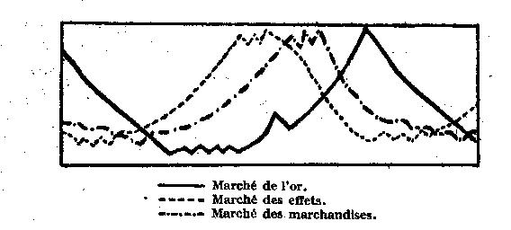

Librairie de Médicis — 1948 (deuxième édition)
par Richard von Strigl
traduit par P. Ochwald
Pour accéder de la manière la plus simple aux problèmes monétaires, nous partirons de ce qu'on nomme l'équation inversée de la monnaie. Nous l'établirons par un raisonnement facile à comprendre. Observons les achats et les ventes qui se font pendant un certain temps, à l'intérieur d'un domaine économique. Pour chacun de ces achats, une certaine quantité de monnaie (g) est donnée en échange d'une quantité de marchandise (w), pour laquelle on calcule un certain prix (p). Par exemple, nous donnerons 2 S, et pour cet argent, nous aurons acheté 20 oeufs à 10 g. Il est évident que la somme d'argent que nous avons dépensée doit être égale au produit quantité de marchandise multipliée par prix (2 S égale 10 fois 10 g ; en général, g égale w multiplié par p). Si maintenant, nous avons constaté cela pour tous les achats dans un certain domaine, limité dans l'espace et dans le temps, et que nous obtenons ainsi un certain nombre d'équations
g1 = w1.p1
g2 = w2.p2
g3 = w3.p3
nous additionnons ces équations, et nous arrivons à la formule
g1 + g2 + g3 = w1.p1 + w3.p2 + w3.p3
Simplifions cette formule en réunissant en un seul tous les postes de chaque membre, à gauche et à droite. Du côté gauche, nous trouvons tout d'abord toute la quantité de monnaie qui a circulé dans le domaine délimité par nous. Mais ici, nous observons que pendant le temps considéré, chaque pièce de monnaie peut avoir servi à plusieurs paiements. Nous tiendrons compte de ce fait en multipliant toute la quantité de monnaie G par une grandeur qui représente la moyenne des paiements que chaque pièce de monnaie a effectués. C'est ce que nous nommerons "vitesse moyenne de circulation monétaire" (U). Du côté droit, nous exprimerons toute la vente des marchandises, dans la formule "volume du commerce" (H), et nous fixerons en partant des divers prix des marchandises un "niveau général des prix" (P). Après ces opérations, qui ont servi exclusivement à simplifier la formule citée plus haut, nous obtenons l'équation de trafic de l'argent (plus exactement, une de ses formes les plus courantes) dans la formule :
G.U = H.P
Avant tout, nous rappelons que l'égalité exprimée dans cette formule entre le terme argent (G.U) et le terme marchandises (H.P) doit être réalisée de toutes façons. Cela résulte sans aucun doute de la manière dont nous avons établi la formule. Mais cela exige aussi que tout changement dans un des termes entraîne un même changement pour l'autre. Si donc la grandeur G.U augmente, la grandeur H.P augmentera aussi, et inversement. Cette concordance peut être obtenue de diverses manières. Nous allons esquisser ici les diverses relations à considérer.
1. Le terme gauche augmente si la quantité de monnaie, ou sa vitesse de circulation, ou les deux grandeurs augmentent. De plus, il est possible que les deux grandeurs aient un mouvement inverse. Par exemple, une augmentation de la quantité de monnaie peut être compensée en tout ou en partie par un recul dans la vitesse de circulation.
2. Le terme droit devient plus grand, si le volume des opérations commerciales augmente, ou si le niveau des prix monte, ou si les deux grandeurs croissent. Il est possible, comme nous l'avons déjà vu, que ces deux grandeurs se meuvent dans des sens opposés, et que le niveau des prix recule, tandis que le volume du commerce augmente.
Pour la réduction des deux termes de l'équation de circulation de l'argent, nous aurons alors les phénomènes inverses. On voit déjà qu'en vertu de la complexité des relations exposées ici, l'application de cette équation de circulation sera très limitée. Nous pouvons bien, à l'aide de cette équation, concevoir les relations qui se produisent dans un "système" existant, mais il ne sera pas possible de prévoir exactement les suites qui résulteront de la modification d'une des grandeurs considérées. On peut déjà se demander si une augmentation de la quantité de monnaie causera une augmentation du terme de gauche. Même si c'est le cas, on pourra toujours se demander si l'adaptation du terme droit se fera par modification du niveau des prix ou du volume des opérations commerciales. Nous en parlerons plus tard, et nous aurons aussi, à ce moment, l'occasion de modifier quelque peu notre façon d'étudier le problème. Pour le moment, nous allons observer plus en détail les diverses grandeurs figurant dans l'équation du trafic, en nous basant sur le développement de cette équation elle-même.
1. La monnaie est "cette marchandise qui, du fait que la grande masse des gens a pris l'habitude de l'accepter, est devenu le moyen général d'échange". Cette définition donne une esquisse de ce qu'est la monnaie, en partant de sa fonction. Pour cette étude, nous considérons comme monnaie tout ce qui, en général (ou au moins dans un rayon assez grand de relations économiques), fonctionne comme moyen de paiement. Nous aurons à distinguer en particulier :
a) Les monnaies ("argent liquide"). Historiquement, elles proviennent de l'emploi de morceaux de métal (fin), qui servaient de moyens d'échange. Les monnaies sont nées du fait que le morceau de métal recevait, par l'empreinte d'un cachet, une "attestation" sur son poids et sa finesse, délivrée par des organismes jouissant de toute la confiance nécessaire, c'est-à-dire par des prêtres, de grands négociants, et avant tout, par l'État. Depuis, tout ce qui touche à la monnaie, au point de vue réglementation, ressort en général de l'État.
b) Billets de banque. Voici comment nous expliquerons la notion du billet de banque : un négociant confie la garde de son fonds d'argent liquide à une banque. Au lieu de faire ensuite une paiement en commençant par aller à sa banque, pour retirer de l'argent, et remettre cet argent à son fournisseur, il donne à celui-ci un certificat de dépôt de l'argent déposé. Ce certificat, portant la signature de la banque, peut immédiatement circuler dans les cercles commerciaux qui connaissent cette banque. Il représente les sommes en liquide déposées dans les coffres de la banque : c'est un "représentant" de la monnaie. Mais ici apparaît quelque chose de nouveau, sortant du domaine de ce qu'on appellerait la technique des paiement. La banque sait que l'argent liquide qu'elle a reçu de plusieurs négociants comme dépôt (en consigne) ne sera pas entièrement prélevé en une seule fois. Elle peut donc prendre sur elle de prêter ailleurs une partie de cet argent, ou de l'engager dans d'autres affaires. Aussi, dès que cela s'est produit, les certificats de dépôt de la banque, qui servaient de moyen de paiement, ont perdu leur caractère de représentants de pièces de monnaie individuelles. En plus de ces certificats de dépôt, il y a encore une partie des pièces de monnaie qui "sont derrière eux" et qui circulent. Il y a donc augmentation des moyens de paiement. Ces certificats de dépôt sont dès lors devenus un moyen de paiement indépendant, à côté des monnaies. Il n'y aura guère de modifications importantes à cet état de fait, si la banque engage dans des affaires de crédit, non seulement les monnaies déposées chez elle, mais si elle met encore à disposition de celui qui lui demande un crédit de nouveaux certificats de dépôt, des billets de banque, qui circuleront donc comme des moyens de paiement, et finalement seront acceptés partout dans le trafic commercial. Mais ces billets-là n'auront plus été créés sur la base d'un dépôt de monnaies.
"Le billet de banque est un moyen de paiement, émis et tiré par une banque, sur elle-même, pour une somme fixée et échue en tout temps. Il est employé comme moyen de paiement dans le trafic général." Formellement parlant, le billet de banque est un titre par lequel la banque s'engage à le payer à tout moment en argent comptant (monnaies). Mais les événements ont souvent conduit à une suspension de cet "engagement de payer en monnaie" et à émettre des billets pour lesquels n'existe aucun engagement de ce genre. Cet engagement est souvent remplacé par un autre sur lequel nous reviendrons.
c) Fonds de virements. Dans le trafic général des échanges d'une économie, telle qu'elle est comprise dans l'équation du trafic de l'échange, il y a — tout au moins depuis le développement d'habitudes modernes de paiement, — un moyen d'achats et de paiements qui joue un grand rôle : c'est celui où ni monnaies, ni billets de banque ne sont mis en circulation, mais où le paiement a lie sous la seule forme d'un virement de crédit. Un négociant doit faire un paiement à un autre ; il charge sa banque de prélever la somme en question par virement sur son avoir et de la porter à l'avoir de l'autre. Le paiement se fait donc par simple passation d'écritures dans les livres des banques. Dès lors, en observant que bien des paiements semblables vont s'effectuer entre diverses banques, on fera dans les banques une compensation réciproque des paiement, et seuls les soldes, s'il y en a, seront balancés par des paiements en espèces au profit de telle ou telle banque. dans ce trafic de paiements, la chose "en mouvement" (comme ci-dessus la monnaie ou le billet de banque), c'est l'avoir du négociant qui règle ses paiements. Ces avoirs portent le nom d'avoirs de virement, et pour les explications relatives à ce qui se passe dans le domaine de l'argent, l'expression "fonds de virement" est devenue courante (plus encore que celle d' "argent en dépôt"). la forme extérieure de paiement prend souvent alors la forme d'un chèque. Ce que nous avons dit au sujet des billets de banque va aussi intervenir pour cet argent de virement. Un négociant dépose à sa banque de l'argent liquide ou des billets de banque, qui restent en dépôt à la banque ; le paiement par virement signifie simplement que cet argent sera transporté de l'actif d'un négociant à celui d'un autre ; il ne s'agit que d'un changement dans la technique des paiements. Là aussi, le chèque n'est qu'un remplacement d'argent. un autre moyen de paiement indépendant, qu'on peut placer à côté de la monnaie et des billets, apparaît lorsque la banque remet à d'autres l'argent qui lui a été confié en dépôt, puisqu'elle sait que les nombreux dépôts qui sont chez elle ne seront pas tous prélevés en même temps (et ne seront pas non plus transférés à d'autres banques pour compenser les pointes de clearings). Dès lors, la monnaie et les billets de banque, qui ont été à l'origine mis en dépôt, sont en circulation (la banque ne conserve qu'une réserve) ; et à côté de cet argent, qui sert à des paiements, les avoirs fonctionnent aussi comme moyens de paiement. On fait un nouveau pas en avant, — comme pour les billets de banque — lorsque la banque donne des crédits sous forme d'avoirs de virement. En ce cas, la constitution d'avoirs n'est pas seulement possible par dépôt à la banque, mais aussi par crédits accordés par cette banque. la banque ouvre un crédit à un négociant, celui-ci paie par virements, sans que l'on prélève de cet avoir constitué par une ouverture de crédit ni argent ni billets de banque. (Naturellement, la banque débitera à son profit le bénéficiaire de l'avoir en question.)
L'argent liquide (monnaies et pièces), les billets de banque et le crédit de virement sont les formes de la monnaie à considérer comme déterminantes dans notre économie actuelle. Nous n'avons rien à dire de particulier sur les autres formes de la monnaie. Mais on remarquera que pour ces trois types, les circonstances qui déterminent chaque fois la quantité d'argent pris comme moyen de paiement seront différentes. Nous aurons à examiner de plus près dans le cours de notre étude ces divers systèmes de paiements. Pour l'instant, nous parlerons brièvement des trois autres grandeurs entrant dans l'équation du trafic monétaire.
2. Un raisonnement très simple nous éclairera d'abord sur la signification de la vitesse de circulation de l'argent, en restant dans le cadre de nos observations sur l'essence de la monnaie en général. Admettons que, pour une cause quelconque, ceux qui dirigent l'économie du pays se décident à changer les règles qu'ils avaient jusqu'à présent observées pour gérer leur caisses. Admettons, par exemple, que les entreprises gardaient dans leurs coffres les sommes qui rentraient, jusqu'à ce qu'elles en eussent besoin pour leurs propres paiements. Maintenant elles se décident à déposer cet argent dans des banques ; ces banques le prêtent immédiatement au dehors, en n'en gardent chez elles qu'autant qu'il leur en faudra, à leur idée, pour les retraits immédiats. Le phénomène dont nous parlons se concevrait, par exemple, si la population de la campagne avait eu l'habitude de garder chez elle l'argent provenant de la vente des récoltes, en automne, et à le dépenser au cours de l'année, peu à peu, suivant ses besoins, tandis que, désormais, elle donnerait cet argent à une banque ou à une caisse d'épargne ; cet argent permettrait donc de faire bien plus de paiements, puisque la banque le prête au dehors, à l'exception de ce dont le déposant aurait besoin pour ses prochains prélèvement. Nous ne dirons rien de nouveaux crédits de virements que cet argent pourra servir à constituer. Il est bien clair qu'en ce cas la quantité donnée de l'argent permet d'effectuer plus de paiements, et qu'ainsi, le terme gauche de notre équation a subi un accroissement. Un développement toujours plus grand de ce genre d'opérations conduira donc à ce que l' "action" d'une quantité d'argent donnée augmentera sensiblement, ce qui, pour les relations que nous avons fixées dans notre équation, se traduira par le même effet que si la quantité de la monnaie avait été augmentée. De cela résulte à l'évidence que la vitesse de circulation de l'argent, tout autant que sa quantité, doit être considérée si on veut fixer la grandeur vraie à faire figurer comme dépense d'argent. Mais, très généralement, on posera en principe que pour des circonstances relativement stables de l'économie, la vitesse de circulation de l'argent peut être prise comme constante pour de courts espaces de temps, et que des modifications profondes de celle-ci devront se produire d'une part, dans le cours de l'histoire générale, d'autre part, lorsque l'économie subira des changements importants (et aussi dans les périodes d'ébranlements ou de crises dont nous parlerons plus tard). Cela, sans préjudices du fait que la vitesse de circulation de l'argent sera très différente dans les divers pays, suivant leurs circonstances propres (densité de la populations, habitudes prises de gérer les caisses de telle ou telle manière, développement de la technique des paiements et de l'organisation des banques).
3. Nous sommes arrivés à la formule du volume des opérations commerciales en réunissant dans un même terme les diverses marchandises qui sont échangées dans le trafic commercial. Deux points sont à mettre en évidence. On peut d'abord étendre plus ou moins le domaine de ces marchandises, et arriver ainsi à une équation plus ou moins universelle de la monnaie, suivant qu'on aura on qu'on aura pas fait entrer en ligne de compte les ventes de certaines marchandises — et naturellement aussi les paiements qui auront eu lieu à leur suite — dans l'établissement de cette équation. Par exemple, on peut traiter de façon différente la vente des valeurs de bourse et autres, et il peut être assez important de savoir si l'on ne veut faire entrer dans le calcul que les ventes de biens de consommation, ou rentrant à peu près dans cette catégorie. La manière dont nous délimiterons les paiements que nous voulons étudier ne changera naturellement rien à l'équation du trafic, ni à sa valeur. Mais, pour les démonstrations qui vont suivre, le mieux sera d'admettre que l'équation de trafic embrasse tous les paiements qui peuvent généralement avoir lieu. Un deuxième facteur est beaucoup plus important. Il concerne l'arbitraire avec lequel nous aurons limité le domaine où notre équation de trafic doit jouer. Il est simplement impossible de réunir en une somme toutes les marchandises vendues dans une certaine économie, pour arriver à une formule unitaire du "volume commercial". Nous n'avons pas la possibilité de ramener les marchandises si diverses qui sont vendues dans le commerce à un "même dénominateur", pour les ajouter ensuite les unes aux autres, — qu'il s'agisse de farine et d'oeufs, de vêtements et de linge, de meubles et de machines, de matières premières et de terrains, etc. Nous devons convenir que la formule du "volume commercial" est une fiction, que nous pouvons bien utiliser pour certains raisonnements, mais que nous ne pouvons pas faire entrer dans le domaine du réel. Cela n'entraîne pas d'autres difficultés pour notre raisonnement. Plus tard, nous verrons que des problèmes importants en découlent, et que des modifications dans les phénomènes économique surviennent du "côté argent" (par exemple, à la suite d'un accroissement de la monnaie), soulevant précisément un problème, puisque ces modifications n'apparaissent jamais dans un volume commercial considéré dans son ensemble, mais toujours au moins au début, dans le domaine limité de certaines marchandises ou groupes de marchandises.
4.Le niveau général des prix peut être défini comme la valeur réciproque ou inverse de celle de l'argent (valeur de l'argent = 1/P). Il faut dire, là aussi, que l'équation de circulation de l'argent contient une fiction dans la formule du niveau des prix. Nous comprendrons mieux cela si nous étudions pour commencer les modifications de la valeur de l'argent par les nombres-indices (indice du "pouvoir d'achat de l'argent").
Notons les prix pratiqués pendant une période passée (année de base T), et comparons-les avec les prix actuellement en vigueur. Si nous fixons alors le rapport dans lequel les prix sont montés ou descendus entre les temps T1 et T2, nous obtenons une mesure pour la modification du niveau ou aussi pour la modification de la valeur objective de l'argent, de son "pouvoir d'achat". Mais il est impossible, techniquement, de considérer là tous les prix et toute les ventes ; nous devons faire un choix, et dès lors commence la difficulté proprement dite. Nous pouvons fixer les prix pour toutes les marchandises possibles. Mais pour quelles quantités devrons-nous introduire le prix de chaque marchandise dans notre calcul ? Un exemple des plus simples va nous montrer que nous arriverons à des résultats fort différents, pour les mêmes changements de prix, suivant le "poids" que nous attribuerons à chaque marchandise respectivement. Le prix du pain est passé dans la période de T1 à T2, de 0,40 à 0,60, le prix d'un vêtement a diminué de 70 à 65. Si nous additionnons simplement ces prix les uns aux autres, nous obtenons le mouvement suivant :
| T1 | T2 | |
| 1 pain | 0,40 | 0,60 |
| 1 vêtement | 70,00 | 65,00 |
| 70,40 | 65,60 |
On constaterait une chute de prix d'environ 7 %. (Du rapport 70,40 : 65,60 = 100 : x résulte x = 93,18. L'indice sera à 93,18 par rapport à l'année de base T1. Le niveau des prix est descendu de 6,83 %.) Mais la liste-indice que nous avons établie a évidemment un défaut, en ce que l'importance des deux marchandises — prises chacune pour une unité — ne correspond ni à leur importance relative dans un ménage normal, ni à leur rôle dans l'ensemble de l'économie. On pourrait plutôt tenir compte de ces éléments dans une liste-indice où l'on mettrait un vêtement en regard de 100 pains.
| T1 | T2 | |
| 100 pains | 40,00 | 60,00 |
| 1 vêtement | 70,00 | 65,00 |
| 110,00 | 125,00 |
Là, nous obtenons un indice de 113,64 ; le niveau des prix a donc monté de 13,64 %. Ce qui montre clairement que suivant que nous combinerons les quantités de ces deux marchandises, nous obtiendrons des nombres-indices très différents. Ce n'est pas l'arbitraire d'un seul exemple qui mène à cette difficulté. Imaginons que dans le calcul pratique de l'indice on fasse entrer une longue de prix de marchandises diverses, on obtiendra ainsi une série d'indices différents, parce que, en fin de compte, c'est arbitrairement qu'on aura fixé les quantités de marchandises — bien que, très probablement, là où les prix se meuvent dans le même sens, en période de grande inflation par exemple, il n'y aura pas à prévoir de différences aussi fortes que dans notre exemple. La différence des résultats, par rapport à la façon de calculer, se montrera par contre d'une manière tout à fait visible quand les divers prix varient dans les deux sens. On a cherché par deux moyens à surmonter cette difficulté dans le calcul de l'indice. D'abord, en renonçant à établir un calcul du niveau général des prix, en se contentant de mesurer les changements de certains "miroirs des prix", définis rigoureusement : variation des coûts dans la manière de vivre, des prix du grand commerce, des prix de produits agricoles ou industriels, des prix des moyens de production, etc. Pour un groupe réduit de marchandises, il y a ainsi relativement moins de mouvements variés ou contraires à attendre. Ensuite, on a essayé de chercher une base à peu près objective pour établir la liste-indice : Soit l'importance relative de diverses marchandises dans les ventes en général, soit aussi — et cela pour le calcul d'indices des prix de la vie — leur importance relative dans un ménage normal, et surtout dans un ménage d'ouvriers. Certes, un reste d'arbitraire subsiste néanmoins. L'importance relative des marchandises dans le commerce subira des modifications, exactement comme leur importance relative dans un ménage (des glissements dans les prix conduisent aussi à des "glissements" de consommation) ; et encore négligeons-nous le fait que les ménages d'ouvriers ont des besoins très divers, suivant la composition de la famille, le niveau culturel et les habitudes alimentaires (habitudes provenant des causes précitées ou d'autres causes).
Mais quelle est la vraie cause de ce résultat, somme toute si peu satisfaisant ? Certaines marchandises seront achetées par diverses personnes pour de l'argent. L' "importance subjective" de l'argent sera fort différente pour chacun des hommes prenant part à la vie économique du pays. Mais on ne peut attribuer aucune réalité à une valeur objective de l'argent. Si donc nous parlons, malgré cela, d'une certaine modification du niveau général des prix, d'un mouvement de la valeur de l'argent, nous employons une formule absolument fictive. Elle peut trouver son emploi pour désigner certains grands mouvements, très visibles. Elle ne peut servir dans une analyse exacte.
Dans notre étude des grandeurs qui entrent dans l'équation de circulation de l'argent, nous sommes donc arrivés à des raisonnements qui limitent beaucoup sa valeur. D'abord, nous avons employé cette formule pour montrer une relation tout à fait générale et pour déterminer les principes de base qui doivent expliquer l'essence de l'argent. Maintenant, nous devrons chercher une autre voie pour pénétrer plus avant dans les problèmes de la monnaie.
Essayons de dresser un schéma de l'organisation du système monétaire actuel. Une densité toujours plus forte des échanges, par suite de l'accroissement de la division du travail, a obligé de trouver un moyen d'échange qui supplante l'échange direct. En effet, l'échange d'une marchandise contre une autre n'est possible que quand l'acheteur d'une marchandise trouve un partenaire qui désire précisément recevoir en échange ce que le premier veut donner (le cordonnier peut naturellement acheter quelque chose chez le boulanger pour une paire de souliers, mais si le boulanger est pourvu de souliers, il n'entre plus en ligne de compte pour longtemps comme partenaire d'échange) ; il faut également que les marchandises offertes à l'échange puissent s'équivaloir par quantités ( le cordonnier ne trouvera guère quelqu'un ayant besoin de chaussures en quantité telle que cela représente la maison qu'il voudrait acquérir). Ainsi, dès que la division du travail est quelque peu développée, le trafic d'échange n'est possible que par la voie du troc indirect, c'est-à-dire qu'une marchandise sera échangée contre une autre, non pas parce que celui qui la reçoit désire lui-même l'employer, mais parce qu'il sait pouvoir acheter quelque chose d'autre avec cette marchandise. Une marchandise "courante à un haut degré" deviendra moyen de troc. On a vu alors que les métaux, et parmi ceux-ci les métaux fins, convenaient le mieux comme instrument d'échange ; il a fallu alors déterminer, par libre choix, le moyen de troc qui conviendrait le mieux ; l'or et l'argent sont ainsi devenus les instruments de troc les plus usités. Pendant des siècles, on a hésité entre les deux, jusqu'à ce que, au cours du XIXe siècle (et, autant qu'on puisse le prévoir, à titre définitif), on se soit décidé en faveur de l'or. Cette décision a été prise parce que l'or s'est montré apte à devenir un métal techniquement monnayable, et aussi parce qu'une stabilité relative de la valeur de l'or a précisément favorisé son emploi comme métal monétaire. (Nous devrons encore parler de la stabilité de cette valeur.) Lors des discussions pour le choix des moyens d'échange, l'État est bien vite intervenu pour réglementer le système monétaire, d'abord en légalisant les pièces de métal pour leur finesse de composition et leur poids, et ensuite en les frappant lui-même. Le nom de l'unité monétaire, pris à l'origine dans le système des poids, est devenu l'unité générale de calcul. Avant que se soit décidé le combat entre l'or et l'argent, ont apparu les deux autres sortes de monnaie que nous avons mentionnées auparavant, billets de banque et fonds de virement. Pour ceux-là aussi est intervenue une réglementation plus ou moins étendue de la part de l'État.
Remarquons ici que l'emploi d'une marchandise comme moyen de paiement devrait, dès les premiers commencements, avoir une influence sur sa valeur. Cette marchandise a été jusqu'à présent utilisée et recherchée pour un certain usage (par exemple, l'or pour faire des bijoux). Si on veut s'en servir pour un autre usage, comme moyen d'échange, sa valeur augmentera de suite par rapport à d'autres marchandises, puisque son emploi comme moyen de paiement occasionnera pour elle une demande supplémentaire, et qu'elle restera encore employée pour des buts industriels.
Mais il est absolument impossible d'établir la valeur de la marchandise servant de moyen de troc en se basant sur ses autres emplois, et précisément sur le fait qu'en devenant bien d'échange, elle reçoit, de par cette fonction, une valeur supplémentaire. Si l'or employé comme monnaie perdait sa fonction de moyen de paiement, cela entraînerait une forte chute de sa valeur (la démonétisation de l'argent a, au cous du XIXe siècle, causé, en fait, la dévalorisation de l'argent, en plus de la découverte de nouvelles mines de ce métal). Par conséquent, le fait qu'on emploie l'or comme monnaie sera déterminant pour sa valeur. Les divers participants à l'économie ont besoin d'argent pour leurs paiements, et pour leurs achats ; ils acceptent la monnaie parce qu'ils savent qu'ils peuvent acheter n'importe quelle autre marchandise avec cette monnaie. Sur le marché, les intéressés en question comptent certainement sur un "niveau des prix". Ils sont en général informés de ce qu'ils pourront acquérir en marchandises diverses pour cet argent, et cette circonstance détermine pour chacun la valeur subjective qu'il attache à ce moyen d'échange, et aussi son attitude sur le marché où il achète avec son argent. L'offre d'argent, sur le marché, contre une demande en marchandises, déterminera les divers prix. Toute modification du côté "argent" se fera bien entendu sentir dans le formation des prix. Mais il serait exagéré de dire que, suivant certaines opinions, les "prix des marchandises" vont changer proportionnellement à la quantité d'argent offerte (ou aussi à la grandeur U.D). Il est en effet très possible que pour une augmentation de l'argent offert, par exemple, seul certains groupes de marchandises subissent une demande plus forte, tandis que la demande ne sera pas plus forte pour d'autres marchandises ; les prix, dans ce compartiment, resteront donc inchangés. (Si, pour une cause quelconque, la demande baisse pour certaines marchandises, il peut même arriver que les prix baissent dans ce rayon, tandis que d'autres augmentent.) Toutefois, il sera assez probable qu'une augmentation de monnaie, même si une demande un peu forte n'intervient que sur une partie limitée du marché, se fera sentir dans un rayon toujours plus étendu. Si l'argent supplémentaire ne profite d'abord qu'à un groupe assez étroit de l'économie, il sera tout de même dépensé et parviendra à d'autres, qui le dépenseront de nouveau, etc. On peut à peine admettre qu'un secteur de l'économie prenant part au trafic libre ne sera pas, tôt ou tard, touché par l'afflux d'argent supplémentaire.
Résumons brièvement tout cela. Les divers intéressés participent à une économie donnée, disposent de certaines quantités de monnaie, qu'ils dépensent suivant leurs situations personnelles pour acheter des marchandises. Il faudra compter, non pas seulement avec ces situations personnelles, mais encore avec les estimations individuelles sur la valeur de l'argent, résultant du prix des marchandises, puis avec la situation particulière de chaque individu, et enfin avec les habitudes de trésorerie qui dépendent de la structure générale de l'économie. Les divers prix des produits se déduisent de la forme que prend la demande de marchandises pour lesquelles on offre de l'argent. On ne peut absolument pas parler d'un niveau général ("moyen") des prix, d'une valeur "objective" de l'argent (d'un "pouvoir d'achat" de l'argent) dans un sens exact. En réalité, nous ne pouvons que fixer un grand nombre de prix spéciaux, qui peuvent évoluer diversement, et un calcul de la moyenne n'est possible qu'avec un certain arbitraire. La constatation qu'il ne peut exister une mesure "objective" pour la valeur de l'argent, contient une autre vérité : à savoir qu'il ne peut exister de monnaie qui satisfasse, dans un sens rigoureux du mot, au postulat de la "stabilité" (valeur stable de l'argent). Nous y reviendrons encore.
Si nous nous demandons ce que peut être l'objet de la politique monétaire, nous devons répondre qu'il ne pourra s'agir d'abord que de politique des quantités de monnaie. (Les possibilités de donner une impulsion directe à la "vitesse de circulation" seront sans doute très limitées. De plus, il est évident que, généralement, l'effet d'une augmentation ou d'une diminution de cette vitesse de circulation ne différera pas grandement d'un accroissement ou d'une réduction de la quantité de monnaie en circulation.) Les questions d'organisation plus détaillées, en relation avec la constitution du système monétaire, sont en dehors des problèmes traités ici. Quelle que soit la façon dont on a organisé la monnaie, la quantité de monnaie à disposition de l'économie, l'invariabilité ou les variations de cette masse de monnaie seront des facteurs déterminants pour l'évolution de l'économie du pays. Notre tâche sera maintenant de voir comment une certaine organisation monétaire et la réglementation des quantités de monnaie qui lui sont rattachées, arrivent à produire leur effet dans l'économie nationale.
Nous prendrons comme exemple d'une organisation monétaire celle qui pouvait, vers la fin du XIXe siècle, passer pour la plus normale, pour la plus saine, après avoir été en vigueur dans la plupart des grands pays du marché mondial. Si cette organisation "classique" de la monnaie d'or n'est pour bien des gens qu'un souvenir de faible actualité, elle nous donne, mieux que tout autre système, la possibilité d'analyser les relations qui existent entre les diverses formes de l'argent. D'autre part, après cette analyse, nous n'aurons aucune difficulté à étudier aussi d'autres organisations monétaires, et cela très brièvement. Pour le système classique basé sur l'or, trois sortes de monnaie sont caractéristiques :
1. Monnaie-or. Ce sont là des monnaies d'or frappées pour leur pleine valeur, et dont la frappe est libre, leur circulation n'étant soumise à aucune interdiction. D'autres monnaies, qui circulent à côté de ces monnaies-or (petite monnaie pour le petit trafic commercial, et éventuellement d'autres monnaies "courantes", reliquats d'une organisation précédente), ne sont pas à considérer comme conditionnant le système en question. Leur frappe est généralement limitée de telle manière que des modifications dans leurs quantités ne pourront pas avoir d'importance décisive.
2. Billets de banques échangeables contre de l'or. La banque d'émission qui a reçu de l'État le privilège d'imprimer les billets doit compter avec l'éventualité d'un échange de billets contre de l'or (le fait qu'il peut exister plusieurs banques semblables dans le pays n'est pas d'un intérêt spécial). Comme la banque émettrice est tenue — et cela, souvent, sous peine de perdre son privilège — à rembourser les billets qu'on présente à ses guichets, la direction de cette banque est obligée d'agir "en père de famille", comme un bon négociant, et de faire en sorte que ses services puissent satisfaire aux demandes d'or. Cela entraîne pour elle la nécessité d'avoir une provision d'or, une encaisse-or en monnaie ou en lingots comme "trésor liquide" avec quoi elle pourra satisfaire, en toute circonstance, les demandes qu'on lui fera. Le privilège des banques comporte une prescription limitant la quantité des billets à émettre. Deux types de ces prescriptions de contingentement sont à retenir. Le contingentement "direct", qui prescrit un maximum de valeur absolue pour les billets (non couverts par l'or) et le "contingentement indirect", qui prescrit un certain rapport entre le montant des billets émis et la couverture en or. Cela signifie que la banque est tenue d'avoir en caisse une certaine proportion de ce montant sous forme d'or (monnaies ou lingot), par exemple un tiers ou un quart. Également dans le cas d'un contingentement indirect, peut intervenir un élément qui agora comme un frein à l'émission, par exemple, si la banque d'émission est tenue de payer à l'État une taxe sur les billets de banque qui dépassent le contingent fixé (en d'autres cas aussi, si elle reste au-dessous d'un certain rapport fixé entre billets à émettre et couverture métallique).
3. Fonds de virement. A côté de la banque d'émission existent d'autres banques qui fonctionnent comme intermédiaires pour le crédit. Elles prennent donc de l'argent des tiers en dépôt et le prêtent au dehors. En dehors de cela, l'exercice des paiements effectués au moyen de virements permet aux banques d'ouvrir des crédits dont l'étendue va au delà des moyens liquides (monnaies et billets de banque) dont elles disposent. Si un commerçant fait usage d'un crédit accordé par une banque, on inscrit à son avoir le montant du crédit, et il peut en disposer, soit en le prélevant des sommes, soit en faisant des virements à un autre négociant, client de la même banque, ou d'un autre institut. Comme l'argent liquide n'entre pas en jeu pour les paiements entre clients de la même banque, tout au plus pour solder des reliquats (et là encore, les soldes peuvent rester ouverts, ou peuvent être nivelés par clearing auprès de la banque d'émission), la banque peut compter que les crédits accordés par elle ne conduiront pas tous à des prélèvements en espèces. Elle peut donc accorder plus de crédits que n'en comporteraient ses moyens liquides (argent possédé par elle, et argent de tiers) ; elle doit seulement veiller avec soin à ce que des prélèvements en espèces puissent être effectués le cas échéant. Il n'existe pas de réglementation légale typique pour les crédits de virement des banques, mais on connaît la prescription qui oblige à maintenir une encaisse liquide (ou une certaine somme en créances immédiatement réalisables) dans un certain rapport avec les obligations immédiates de la banque.
La question du fonctionnement de cette organisation monétaire revient surtout à réglementer les quantités des diverses sortes de monnaie dont nous venons de parler. Pour les monnaies-métal, cette question trouve une réponse immédiate et facile : c'est le trafic qui déterminera le volume des monnaies-métal en circulation. En effet, tout individu pourra retirer des monnaies de la circulation, puisqu'il peut les faire fondre, ou les exporter ; et comme la frappe est libre, chacun peut aussi faire frapper de l'or (contre un léger droit de frappe, bien entendu). Ainsi, la monnaie-étalon reçoit la fonction extrêmement importante et caractérisant l'essence même de l'étalon-or, de lier étroitement la valeur de l'unité monétaire avec la valeur actuelle de l'or. Si l'or permet d'obtenir, en tout lieu, davantage que les autres monnaies, la valeur substantielle contenue dans la monnaie d'or sera réalisée par fonte. Si, inversement, les monnaies d'or ont une valeur plus grande que l'or non monnayé, l'or en lingots affluera à l'usine de frappe. On peut concevoir de suite que cette adaptation se fera avec la plus grande exactitude, de sorte que l'on n'observera pas de divergence sensible entre la valeur (de troc) des monnaies d'or, et la valeur de leur teneur en or. Nous examinerons plus loin si cette liaison de la valeur de l'unité monétaire à l'or est un avantage ou si elle n'entraîne pas d'inconvénients sérieux. Pour le moment, nous retiendrons surtout comme première fonction de la monnaie-étalon, dans le cadre du système monétaire-or, le rattachement de la valeur de la monnaie à la valeur actuelle de l'or. On notera toutefois que la valeur de l'or n'est pas, même en ce cas, une valeur intrinsèque, une valeur "invariable", particulière à l'or. Ce qui détermine la valeur de l'or, c'est la demande de ce métal, et celle-ci est, pour la plus grande partie, primant tout le reste, une demande ayant trait à des buts monétaires.
La mesure dans laquelle on émettra des billets de banque dépend avant tout de l'action de la banque d'émission. Actuellement l'émission de billets se fait (pratiquement toujours) par attributions de crédits ; en fait, la forme classique de cette attribution consiste en affaires d'escompte. Un effet soumis à des règles précises (payable dans le pays, libellé en monnaie du pays, échéance à trois mois au plus, et portant au moins deux ou trois signatures) est escompté par la banque, c'est-à-dire que le montant du billet, après déduction d'une certaine somme calculée suivant l'échéance et suivant le taux de l'intérêt (intérêt fixé dans la règle unitairement et officiellement publié), — ce qu'on appelle le taux bancaire (le taux d'escompte), — ce montant est versé immédiatement au négociant qui présente l'effet à la banque. Du fait de l'escompte d'un effet, un certain montant de billets de banque entre dans le trafic (l'effet qui reste en portefeuille à la banque d'émission devient "couverture" des billets en circulation), et à l'échéance, cet effet est encaissé par la banque ; ainsi la quantité de billets qui est sortie de la banque par l'escompte, rentre dans les caisses (c'est le principe du retour automatique des billets, qui ne joue pas seulement lors des affaires d'escompte, mais partout où la banque d'émission accorde des crédits d'autre genre. La "sévérité" en matière d'escompte donne une forte garantie pour le remboursement des crédits, et ici le remboursement n'est pas seulement l'affaire de celui auquel on fait crédit, mais encore et avant tout de celui qui doit payer l'effet, le tiré).
Maintenant, pour comprendre le fonctionnement de l'étalon-or, il faut bien remarquer que l'émission de billets par la banque centrale est, dans ces circonstances, dépendante de la mesure où les traites présentées sont admises à l'escompte ; la banque d'émission a dans la fixation du taux d'escompte un moyen très simple de réglementer cet afflux de traites. La demande de crédit qui se manifeste par la présentation d'effets à l'escompte ne se forme pas autrement que n'importe quelle autre demande. Plus haut sera le prix, et plus petite sera la demande, et en ce cas, le prix qui peut fixer la limite de la demande est le taux de l'intérêt. Si la banque d'émission élève son taux, on présentera moins d'effets ; si le taux diminue, le nombre des présentations augmentera. La cause fondamentale de ce phénomène sera brièvement exposée par un rappel à la théorie du capital. Si l'approvisionnement en argent est augmenté, et cela sous forme de capitaux permettant des investissements, on voit que, par suite du revenu décroissant (c'est le cas comme pour d'autres moyens de production), une augmentation de capitaux impliquera un plus faible revenu de ce capital. (Cette relation ne sera vraiment établie que lorsque nous aurons étudié les rapports du capital-argent et du capital réel, voir page 176). Le principe de "l'étagement" de la demande en crédit est d'importance déterminante pour les directives générales qui commandent la politique des banques d'émission. Remarquons toujours qu'on ne peut parler d'une exception dans la formation de la demande, lorsque cette demande se déplace par suite de modifications quelconques dans l'économie, même s'il ne s'agit que de changements dans l'opinion, dans les dispositions du public, dont on ne pourra pas toujours donner des raisons positives. la dépendance de la demande vis-à-vis du prix exigé, le fait que la demande est toujours plus faible, si le prix est plus élevé, peut, nous l'avons vu, toujours être admise comme donnée pour le circonstances qui interviennent au moment même (voir pages 25 et suivantes). La banque d'émission a aussi la possibilité de satisfaire la demande dans une proportion plus petite que le comporterait le taux de l'intérêt. Elle peut fixer un taux d'intérêt réduit, et d'autre part éliminer d'une manière quelconque les demandes qui ne doivent pas être satisfaites. Nous avons déjà fait certaines remarques sur les suites que le recours à un principe d'élimination non économique pourra entraîner immédiatement (voir page 130). Ici nous dirons simplement que les banques d'émission ont mis en pratique un moyen simple pour limiter les demandes en exerçant une censure plus ou moins sévères sur les effets.
De toute façon, nous pouvons nous baser sur le fait que la banque d'émission peut limiter les demandes de crédit par fixation de l'intérêt. Ainsi, dans la politique des banques d'émission, la fixation du taux d'intérêt est à considérer comme le moyen le plus adéquat pour influencer le marché. Voyons dès lors dans quels buts la banque d'émission utilisera cette politique.
Su ce point, sur la question de savoir quelle tâche la banque d'émission doit se proposer de remplir et ce qu'elle est en droit de se proposer comme but, les opinions pourront varier énormément. Mais, pour notre analyse du système classique de l'étalon-or, une seule position entre en ligne de compte. La banque d'émission a intérêt à accorder autant de crédits que possible, puisqu'elle fait par là des bénéfices, en comptant des intérêts pour les billets de banque qui, en pratique, ne lui coûtent rien (la politique qui consiste à réduire les crédits en élevant les taux d'intérêt et en n'utilisant ainsi qu'une demande capable de payer plus, n'est pas à envisager ici). Mais, en même temps, la banque d'émission doit veiller à pouvoir tenir ses engagements, et ces engagements comportent en tout premier lieu l'assurance que les billets de banque seront remboursés (dans ce sens on peut parler d'une "liquidité" de la banque d'émission). Pratiquement, cette tâche est définie par la formule : "Défense de l'encaisse". La banque d'émission doit prendre soin qu'aucune demande ne puisse lui être faite qui épuiserait son encaisse et la mettrait en danger de ne pouvoir remplir son engagement le plus important : celui de rembourser les billets. C'est pourquoi elle doit toujours agir en sorte que les porteurs de billets n'aient pas avantage à les échanger contre de l'or. Cet avantage n'existera évidemment pas tant que les billets auront la même valeur que la monnaie d'or, donc, aussi longtemps qu'on pourra acheter la même chose avec un billet ou avec de l'or. Le but principal de la banque d'émission sera donc de maintenir la parité entre les billets et l'or, et elle peut toujours atteindre ce but par sa politique de crédit. Si elle ressent la plus petite pression sur la valeur des billets, si elle s'aperçoit — ce qui revient pratiquement au même — que l'or s'écoule de chez elle, elle doit, par réduction de la masse des billets en circulation, faire en sorte que la parité complète entre l'or et les billets se rétablisse. La réduction de la circulation sera obtenue par élévation du taux de l'intérêt, chose qu'occasionne automatiquement un reflux des billets vers la banque (pour les effets escomptés à court terme l'effet est relativement rapide). Ce même retour des billets se produira si d'autres crédits antérieurement accordés sont également réduits. Si nous nous demandons maintenant de quelle façon la limitation de la circulation se fait sentir dans l'économie du pays, nous voyons apparaître un phénomène très important. Si on accorde moins de crédits à ceux qui devraient en disposer pour la marche de l'économie, ils disposeront de moins d'argent. Certains pourront moins acheter, et pourront être forcés de vendre, même à des prix plus mauvais. Le resserrement de crédit et la réduction de la circulation d'argent qui s'y rattache pèse sur le prix des marchandises, la valeur des billets augmente par rapport à ce prix, et cette valeur plus élevée fait disparaître la cause qui aurait poussé à échanger ces billets contre de l'or, à savoir le fait que les billets de banque valaient moins que le métal. Et ici, nous pouvons noter un principe général : la hausse du taux d'intérêt de la banque d'émission déclenchera une baisse des prix, tandis que, inversement, la baisse du taux de banque permettra une hausse des cours. L'effet de cette mesure dépasse ainsi le domaine de l'abondance en argent. Cette relation entre le taux de l'intérêt et le prix des marchandises est souvent difficile à concevoir pour ceux qui ne sont pas économistes. La pensée, qui est habituée à une représentation rigide de ce que sont les frais, nous dit que des intérêts élevés doivent causer une élévation des prix, puisqu'ils font partie des coûts de production. Or, ce n'est pas le cas, nous venons de le démontrer. Lorsque les prix baissent d'une manière générale, on peut aussi tenir compte des coûts plus élevés causés par les intérêts plus forts, en ce que la "tension", le décalage, qui existe entre les prix des moyens de production et les prix des produits alimentaires augmentera, du fait que les prix baisseront plus que les autres, et qu'ainsi les frais d'achat diminueront pour le producteur.
On est souvent disposé à admettre d'emblée l'exactitude des relations énoncées ci-dessus pour des "circonstances normales", mais à discuter leur valeur pour des temps "anormaux" (la guerre par exemple). Cela n'est certainement pas justifié. Certes dans des périodes troublées, les banques d'émission n'ont pas toujours poursuivi la politique qui était nécessaire pour assurer l'échanger de leurs billets. Mais l'histoire nous rapporte des cas ou même les pires secousses des guerres n'ont pas amené de diminution de la valeur des billets de banque. Peut-être admettra-t-on aussi que dans beaucoup de cas, pour des raisons de politique générale et autres, il aurait été très difficile de poursuivre cette politique des banques d'émission, qui aurait amené peut-être par une sévère limitation des crédits et une raréfaction de l'argent une chute des prix des marchandises pénible à supporter pour beaucoup. En fait ce n'est pas la relation entre les prix et la masse des crédits accordés qui a flanché, mais bien la politique des banques d'émission. Plus tard, nous reviendrons encore à ce sujet.
Encore une brève remarque sur le rapport entre les engagements de la banque touchant l'échange des billets, et les règles de contingentement. A première vue l'engagement de remboursement représente quelque chose de plus étendu que l'obligation de maintenir une certaine couverture. Car la banque d'émission ne peut satisfaire à la prescription du contingentement que s'il n'y a pas de saignées trop fortes dans son encaisse. Or, empêcher ces saignées est, on le sait, la tâche principale de la banque d'émission, comme conséquence de son engagement de rembourser les billets à présentation. Il est de même évident que la valeur des billets ne peut jamais être assurée par la couverture donnée par l'encaisse métallique. La meilleure couverture ne sert à rien si la banque d'émission fait une politique qui n'empêche pas les trop fortes sorties d'or. La banque d'émission réglemente la grandeur de la circulation par sa politique, et seule la limitation de la masse des billets garantit qu'ils ne subiront pas une dévalorisation, et qu'on évitera une perte d'agio.
Ce que nous venons de dire sur la réglementation de la circulation des billets par la politique d'intérêts de la banque d'émission peut s'appliquer sans réserves aux crédits de virement accordés par d'autres banques. Il est immédiatement possible d'étendre les raisonnements développés ci-dessus relativement aux crédits de virement accordés par la banque d'émission qui peuvent aussi naître sous forme d'escompte d'effets de commerce. Étant donné que les "engagements à vue" de la banque d'émission peuvent être à tout moment prélevés en argent, comme ils peuvent aussi servir de moyens de paiement par la voie du virement, on les voit souvent mentionnés dans les prescriptions réglant la couverture de la banque d'émission. La banque accorde-t-elle plus de crédits que ce qui correspondrait à son encaisse d'argent liquide ? C'est là l'origine de ce qu'on a nommé "argent pour virements". Les banques peuvent accorder plus ou moins de crédits, mais elles doivent toujours s'efforcer de conserver leur "liquidité" : De même que la banque d'émission doit être en mesure de donner de l'or sur demande, une autre banque doit pouvoir sortir des billets sur demande, selon ses engagements de virements. (Éventuellement, on pourra compter comme encaisse liquide des créances réalisables immédiatement, par exemple des avoirs à la banque d'émission.) La banque devra réduire ses ouvertures de crédit, si elle court le risque de ne pas pouvoir satisfaire les demandes de fonds qui lui seraient faites. La politique du taux d'intérêt, combinée peut-être avec une critique plus ou moins rigoureuse de ceux qui sollicitent des crédits, permettra à la banque de réglementer la proportion de crédits à accorder.
Nous indiquerons encore brièvement ce que sont les rapports entre les banques d'émission et les autres établissements qui accordent des crédits. De prime abord, la mesure dans laquelle l'économie est approvisionnée en billets de banque aura une influence indirecte sur la trésorerie des autres instituts bancaires et, par cette voix détournée, influencera les crédits accordés par eux. En fin de compte, une réduction des crédits accordés par la banque d'émission conduira à une limitation de l'encaisse des autres banques, et les forcera aussi à réduire leurs crédits. Cette conséquence est importante, tout d'abord parce que l'approvisionnement de l'économie tout entière en moyens de paiement (sans parler de la provision d'argent monnayé) n'est pas seulement déterminé par la politique suivie par banque d'émission, mais encore celle des autres banques. Mais on a vu, à certaines occasions, qu'une politique restrictive de la banque d'émission, tendant à réduire les ouvertures de crédit et par là, la masse des billets en circulation, était contrecarrée par une politique d'expansion des autres banques, lesquelles faisaient plus de crédits (en abaissant le "ratio"), donc en remplaçant les billets de banque sortis de la circulation par de l'argent de virement. Dans tout cela, on admet d'avance que les diverses banques observent les mêmes règles dans l'ouverture des crédits. Si une seule banque augmentait ses ouvertures de crédit, elles se trouverait vite en difficultés de paiement, puisqu'elle se trouverait dans une situation passive dans ses rapports de comptes avec les autres banques. Mais, d'après ce que nous avons dit précédemment, on ne doutera pas qu'un "tour de vis" plus fort de l'escompte, effectué par la banque d'émission, suffira pour qu'elle-même garde en mains la "maîtrise du marché monétaire", même si une coordination de sa politique avec celle des autres banques n'est momentanément pas possible.
A côté de l'étalon-or classique, nous verrons d'autres systèmes monétaires, pour lesquels il n'existe pas de différences fondamentales, et qui sont à considérer comme variétés du premier. C'est le cas pour les systèmes qui n'ont plus de circulation effective en monnaies-étalons (étalons du "bloc-or"), mais qui maintiennent une parité entre les billets en circulation et l'or. Le problème théorique consiste exclusivement dans le fait de maintenir une liaison entre la valeur du billet et celle de l'or. Si l'on a reconnu que la banque d'émission, par sa politique du taux de l'escompte, peut réglementer la présentation des effets et par là même la mesure des ouvertures de crédit, ainsi que la circulation des billets, il est aussi bien évident que la même politique peut suffire à assurer la stabilité dans la relation entre les billets de banque et l'or, exactement comme si les billets étaient convertissables en or, et bien qu'aucune monnaie d'or ne circule. Dans ces conditions, l'engagement de la banque d'émission de rembourser les billets en or est souvent remplacé par celui de délivrer des valeurs-or, sous formes de devises payables en or, à un cours déterminé, ou, ce qui pratiquement revient au même, de garantir que les cours des effets de commerce sur les pays ayant l'étalon-or restent stables. Il s'agit de l'étalon des devises-or. La banque d'émission doit alors empêcher la variation des cours par une politique d'escompte appropriée. A cette occasion, il peut se produire une manoeuvre particulière, qui est du reste également possible dans l'étalon-or classique, l'intervention de la banque d'émission sur le marché public de l'argent (open market operations). Pour influer sur la circulation des billets et sur l'ensemble du marché de l'argent, la banque d'émission achète en marché libre, ou revend sur ce dernier des valeurs d'État tirées de son portefeuille, ou plutôt des devises et des valeurs étrangères. Il est clair qu'une vente effectuée par la banque d'émission représente un certain retrait de billets de la circulation (le déclenchement d'un certain mouvement peut, dans certains cas, être plus important que l'action immédiate, mesurée à la grandeur des opérations effectuées) tandis que, inversement, un achat par la banque d'émission agit dans le sens d'une plus grande liquidité du marché monétaire. En particulier, la manipulation de devises étrangères représentera un approvisionnement immédiat du marché dans ces valeurs, et aura de suite un effet sur les cours. Ainsi, la banque d'émission possède — à côté du "grand moyen" qu'est la politique de l'escompte — un "petit moyen" qui peut influer avec une grande précision sur le marché de l'argent, et dont elle peut faire usage dans l'intérêt de sa tâche, qui est la stabilisation du cours des changes (du prix de l'or).
Si nous voulions aller plus loin et étudier encore d'autres systèmes monétaires, nous citerions le cas où la banque d'émission d'un pays qui n'a pas de monnaie d'or maintient le change à un niveau variable, par sa politique de mesures appropriées dans ce sens, ou aussi le cas où le prix d'une marchandise quelconque — du fer, du café, ou d'autre chose — est maintenu stable, — et enfin le cas, assez semblable, d'une moyenne de prix de marchandises. Et cela nous amène à l'organisation monétaire qui est souvent discutée aujourd'hui, à savoir le système de l'indice-étalon. Du moment que la banque d'émission peut toujours influer de manière quelconque sur la valeur des billets, par sa politique bancaire, elle peut aussi diriger cette politique de telle façon qu'un indice quelconque du "pouvoir d'achat de l'argent" soit maintenu stable. En fait, il ne s'agit pas d'autre chose que de ce que nous avons vu récemment à propos de l'étalon-or. L'étalon-or implique simplement que la politique bancaire de l'institut d'émission est dirigée de telle façon que le prix de l'or, exprimé en billets de banque, reste stable. Si dans le système classique de la monnaie-or des monnaies-étalons sont en circulation, cela ne signifie guère autre chose que ceci : Du fait que ces monnaies circulent, il y a une indication extérieure apparente, sur la situation de la monnaie. Si la banque d'émission, à la suite d'une dévalorisation de la monnaie, n'est pas en état de rembourser les billets en or, et si elle se trouve dégagée de faire ce remboursement, la dévalorisation des billets aura pour effet que personne ne paiera en or, si on a la possibilité de payer en billets, et si l'on obtient pour de l'or plus de billets qu'on ne devrait normalement en obtenir suivant la valeur nominale de l'or. Les pièces d'or disparaîtront de la circulation, ou bien, si la loi le permet, elles seront échangées contre des billets, mais avec une prime. Mais aussi longtemps que les monnaies d'or circuleront à côté des billets et seront acceptées et données comme eux, chaque personne qui participe à la communauté de paiements représentée par l'économie nationale sait de suite que la valeur des billets de banque est égale à celle des monnaies d'or. La circulation en monnaies-étalons correspond à une attestation publique que le prix de l'or, calculé en billets, est stable. Mais cette circulation de monnaies d'or n'est pas indispensables. Une politique consciencieuse et sévère, exercée par la banque d'émission, peut stabiliser la valeur des billets vis-à-vis de l'or, même s'il n'y a pas de monnaies-étalons. De même qu'on peut stabiliser un prix de l'or (le prix des devises des nations qui ont l'étalon-or) de même qu'on peut le faire pour tout autre prix, il est aussi possible de rendre stable une grandeur fictive, une moyenne de certains prix, donc un indice. Cette tâche peut aussi être accomplie par les moyens dont dispose une banque d'émission.
Nous reparlerons plus loin des questions qui se rattachent à cette façon d'organiser le système monétaire. Mais nous traiterons auparavant de quelques questions ne se rattachant pas directement à ce que nous avons dit ici.
Dans un chapitre précédent, nous avons exposé que, dans une étude sur l'économie naturelle, on devait considérer comme forme originaire de capital tout d'abord un fonds de biens de consommation devant servir à rémunérer soit des moyens de consommation devant servir à rémunérer soit des moyens de production, soit surtout des ouvriers, qui doivent recevoir leur salaire avant que ce qu'ils ont produit soit arrivé au stade de biens finis, prêts pour la consommation. Il faut ici ajouter quelque chose, et cela pour une raison compréhensible. Dans l'économie qui emploie de l'argent, l'argent représente précisément pour le public la forme primitive du capital. L'argent ne sert pas seulement à acheter des biens-capitaux de toute espèce, mais aussi, très fréquemment, à rémunérer les ouvriers. L'argent qui prend ici la fonction de capital est, ou bien propriété directe de celui qui l'investit dans son affaire, ou bien a été emprunté à un capitaliste. Mais en fin de compte, la relation la plus étroite avec les problèmes de l'argent se montre dans le fait que cet argent peut aussi être un produit, une création des banques — que ce soit sous forme de billets ou de crédits de virement. Donc, si dans une économie "naturelle" (ou dans l'organisation d'une telle économie), l'offre en capitaux n'est jamais qu'une offre de biens en nature (biens-capitaux, ou biens de consommation différée), dans une économie plus avancée, où existent de l'argent et des crédits, l'offre en capitaux doit être d'abord considérée comme offre d'argent pour des investissements variés ; il faudra donc envisager le remboursement ultérieur, et cette offre d'argent ne doit pas nécessairement correspondre à une certaine quantité de biens réels. C'est ici qu'apparaît la question importante de la coordination du capital-argent et du capital réel. Nous allons aborder cet ensemble de problèmes en considérant d'abord un schéma dans lequel cette coordination se montre de façon évidente. Ensuite, nous devrons voir quels sont les faits qui interviendront pour rendre cette coordination effective, et enfin, quelles seront aussi les conséquences du manque de coordination.
Supposons donc une économie complètement développée, avec circulation d'argent. Il existe des biens-capitaux de toute sorte, mais la rémunération des moyens de production se fait exclusivement en argent, de sorte que le "fonds de salaires" dont nous avons parlé précédemment n'apparaît pas comme masse distincte. Que sera dès lors le processus d'emploi des capitaux dans le cadre du système de circulation générale de l'économie ?
Les produits de la production en biens de consommation sont vendus par le producteur contre argent. Nous verrons plus loin quels sont les acheteurs. Mais les rentrées en argent qui proviennent de cette production de biens de consommation se trouveront réparties entre tous ceux qui ont contribué à cette production. Une partie de l'argent sert à payer des ouvriers, une autre à payer la rente du sol (loyers), une autre à payer des matières premières, et les produits accessoires, une partie enfin à se procurer peu à peu des installations en biens-capitaux durables, et les renouveler ; ensuite, selon le cas, viendra le paiement des intérêts du capital extérieur emprunté, et le reste représentera le salaire du producteur lui-même, et son bénéfice. (Pour plus de simplicité, nous ne considérerons pas ici le rôle du commerce, qu'on pourrait sans difficultés introduire dans ce schéma.) La rentrée d'argent totale se partage donc ou bien en revenu (salaires d'ouvriers, rente du sol, intérêts, rémunération de l'entrepreneur et bénéfice) ; ou bien elle arrive aux mains d'autres producteurs qui livrent des biens-capitaux (soit des matières premières, soit des produits accessoires, soit aussi des biens-capitaux durables). L'argent qui parvient ainsi entre les mains des producteurs qui créent des biens-capitaux dans les stades de production précédents, et cela sous forme de paiement pour les biens capitaux qu'ils ont vendus, est de nouveau réparti par ces producteurs de telles sorte que, ou bien des revenus immédiats se créent, ou bien on achète d'autres moyens de production. Ce processus peut embrasser plusieurs stades, et chaque fois, dans les stades antérieurs de production, une partie des rentrées partielles en argent se trouveront réunies, provenant de fabrication de biens de consommation tout à fait diverses. Si nous suivons ce processus de la répartition de la rentrée de l'argent provenant d'une production de biens de consommation, en remontant en arrière, c'est-à-dire dans des cycles de production antérieurs, nous verrons qu'une partie toujours plus forte de cet argent va aux revenus, et qu'il en est consacré toujours moins à des placements en capitaux. Imaginons ce cycle comme terminé, en ce que la rentrée d'argent totale provenant de la fabrication des biens de consommation est transformée en revenu : Sur cette rentrée, on a rémunéré des moyens de production qui étaient directement utilisés dans la production considérée, ainsi que dans les productions antérieures. L'argent, qui était au début rentrée de fonds dans la production des biens de consommation, est dès lors transformé en revenu. Donc les gens qui ont ainsi acquis un revenu dans les divers stades de la production sont ceux qui achètent la production complète de la fabrication de biens de consommation. Le circuit est dès lors fermé. On pourrait entrevoir une difficulté en ce que la rentrée d'argent ne devient pas aussitôt et entièrement un revenu pour certains stades de production très antérieurs auxquels cet argent ne parvient qu'après une longue série d'achats et de ventes. Cette difficulté se résout facilement. Si l'argent qui rentre à la suite de la production de biens de consommation ne devient un revenu que par la suite, un autre revenu s'est déjà créé au stade en question et provient de productions antérieures ; ce revenu en argent arrive maintenant sur le marché, et apparaît comme acheteurs de biens de consommation (synchronisation des divers écoulements de la production).
Dans notre schéma, la production complète en biens de consommation a donc été absorbée par les gens ayant un revenu. Il se peut d'abord qu'une erreur de l'organisation de l'industrie ait eu pour effet que l'on n'ait pas fabriqué exactement les biens de consommation qui étaient réclamés par les divers porteurs de revenu. Dès lors les marchandises dont on a produit "trop" baisseront de prix, et celles dont on a produit "trop peu" augmenteront. Ces variations dans les prix montreront plus tard à la production la voie à suivre pour s'adapter aux besoins. Si nous avons tenu à mentionner cette erreur possible de la production dirigée, c'est que nous aurons prochainement à parler d'une autre erreur "possible" très différente de la première. Retenons simplement ceci : Le produit complet des biens de consommation se transforme en revenu.
Quelle attitude avons-nous adoptée dans ce schéma touchant l'emploi des capitaux ? Nous avons tout d'abord supposé que le capital existant était conservé. Le producteur, qui a précédemment investi du capital, reçoit au fur et à mesure que cette production s'écoule, une partie de son capital en retour, sous forme de rentrée d'argent. S'il veut conserver son capital, il devra investir à nouveau cette "quote-part de renouvellement" du capital investi auparavant. (Ceci s'applique autant aux immobilisations de capitaux à long terme qui s'amortissent au cours des années, qu'aux matières premières et produits accessoires, dont l'emploi est immédiatement suivi d'une libération du capital investi, lorsque le stade de production considéré est terminé.) L'épargne qui a été faite une fois se trouve donc "conservée" (voir page 99). Il n'y aurait même guère de changement dans le cours du processus complet, si nous devions constater, à côté de cela, une modification dans la propriété des capitaux : Si un capitaliste "dévorait" le capital libéré, — un autre capitaliste le remplacerait, — qui renoncerait à consommer tout et consacrerait une part de son revenu non pas à acheter du "consommable", mais à faire des investissements. En fin de compte, ce changement dans les positions est aussi possible pour du capital non encore libéré. Le propriétaire d'une installation à capitaux immobilisés à long terme vend celle-ci à quelqu'un ayant économisé de l'argent. De ce fait il peut maintenant "manger" sa fortune liquide, tandis que quelqu'un d'autre a investi un capital à sa place. A la fin, rien ne serait pour ainsi dire changé dans ce que nous avons observé jusqu'ici, si (pour solde), il y avait, ou bien formation de nouveau capital, ou bien absorption, consommation de capital. Le capital nouvellement formé servirait à des investissements, et cela aurait pour résultat une modification correspondante de l'organisation de la production. Une consommation de capitaux signifierait que la production devrait s'adapter à un rétrécissement des capitaux. Certes, un tel changement dans l'approvisionnement en capitaux transformerait la production entière, puisque le capital sous ses formes diverses, est employé dans tous les stades de la production ; mais cette modification ne serait à considérer ici que comme une simple adaptation, exactement comme si la production devait s'accoutumer à une modification de ses approvisionnements en d'autres moyens de production. Si dans notre schéma, nous avons admis dès l'abord que le capital était conservé, nous n'avons pas encore vu tout ce que cela implique comme conditions particulières. Et dès lors nous rentrons dans le domaine des problèmes spécifiques de l'argent. Ce capital-argent qui, dans notre schéma, est arrivé à l'investissement, a été créé complètement par des rentrées provenant de la consommation de certaines marchandises. Une partie de cet argent est investie. Mais que se passera-t-il si à côté de ce capital-argent, qui est né des rentrées de la production de biens de consommation, un capital nouveau en argent est mis, en plus, à la disposition de l'économie ?
Cela est évidemment possible. Nous avons observé que les banques créent en quelque sorte de l'argent. La banque d'émission étend ses ouvertures de crédit et augmente ainsi le nombre des billets de banque. Les autres banques accordent des crédits supplémentaires. En fin de compte, il est aussi possible que de l'argent, qui a été thésaurisé pendant longtemps après avoir été gagné par quelqu'un, fasse son apparition sur le marché. De même, des entreprises pourrint avoir eu l'habitude de gérer leur trésorerie d'une certaine façon et diminueront maintenant leur encaisse d'argent liquide. On trouvera constamment dans l'économie des thésaurisations et des dépenses, des augmentations et des diminutions d'encaisse. Le solde des modifications de la "virulence" de l'approvisionnement donné en argent, combiné avec le solde des augmentations et des diminutions de crédit faites par toutes les banques, tout cela, à côté de l'argent provenant de la production de biens de consommation, influencera l'ensemble des offres de capitaux sur le marché de l'argent. L'importance de l'offre en capitaux-argent est devenue dès lors indépendante des résultats de l'épargne "actuelle" ou "conservée". A côté du capital qui, dans notre schéma, se prélève sur des rentrées provenant de la consommation des marchandises, par le fait qu'une partie de ces rentrées sont mises à disposition de ceux qui veulent investir, apparaîtra un capital supplémentaire en argent. (Nous ne pouvons ici parler en détail du pendant de cette modification, à savoir la diminution de l'offre en capitaux-argent par retrait de crédits.) cette intervention de capitaux supplémentaires aura nécessairement une action sur le taux de l'intérêt qui sera abaissé. Et nous remarquons que le taux de l'intérêt se trouve réduit par rapport à la grandeur qui apparaîtrait si cet argent d'appoint n'intervenait pas.
Un intérêt devrait du reste aussi exister dans une économie ne connaissant pas l'argent. Cela parce que l'emploi de capitaux (unités de K.t) augmente le revenu de la production, et qu'on attribuera donc au capital une part du succès de l'entreprise. L'intérêt est l'expression du prix pour le produit marginal du capital (grandeur K.t), exactement comme les salaires sont l'expression de rendement du travail (productivité marginale). L'intérêt, comme tout autre prix payé pour des frais quelconques, donne la limite jusqu'à laquelle l'emploi de capitaux est possible. C'est sa fonction régulatrice dans l'organisation de la production. Et si l'emploi de capital libre dans la production signifie qu'on investit de l'argent dans des biens-capitaux et dans des immobilisations à long terme, l'intérêt donnera la limite jusqu'à laquelle l'investissement est possible. Une fixation trop basse de l'intérêt signifierait qu'on croirait pouvoir investir plus qu'il y a en réalité à investir. On constatera, dans la suite du processus de production, qu'il n'y a pas assez de capital, pour qu'on puisse mener les immobilisations à bien sans avoir à se limiter, et pour qu'elles puissent s'adapter sans frictions à l'édifice d'ensemble de l'économie. Et tout cela arrivera, si l'intérêt est plus bas que l'intérêt "réel" du capital qui correspond à l'offre de capitaux réels. Dans les circonstances normales, nous ne pouvons nous figurer le capital libre (liquide) que sous forme d'un fonds de salaires. Dans l'économie utilisant l'argent, il y a tout d'abord (dans notre schéma simplifié) une offre de capitaux-argent qui est venue de la séparation d'une partie des rentrées provenant de la production des biens de consommation et qui représente aussi une offre en marchandises prêtes à la consommation. S'il y a investissement de capital, on paiera avec ce capital des moyens de production, qui pourront à leur tour payer ces biens de consommation. Mais si du capital d'appoint intervient, un intérêt diminué signifiera que l'on considérera comme rentables des investissements qui ne le seraient pas, si on s'en tenait au taux de l'intérêt qui correspond à l'intérêt du capital réel. Cela signifie également que la possibilité d'acheter des marchandises va croître par rapport aux possibilités d'achat normales, résultant d'une répartition non troublée des capitaux. De cela devront résulter des troubles étendus dans la production. Nous continuerons pour l'instant notre démonstration théorique ; plus tard nous parlerons de son application tout à fait importante.
L'ouverture de crédits supplémentaires par les banques (expansion de crédit) signifie tout d'abord qu'un approvisionnement plus fort en capitaux est à disposition de l'économie. Ce renforcement des capitaux représente aussi une diminution de l'intérêt de l'argent, puisque le placement d'une offre plus étendue de crédit — comme celui d'une offre plus grande d'autres marchandises — n'est possible que pour des prix abaissés, ou dans notre cas, pour un taux d'intérêt réduit. Comme la production calcule exclusivement en argent, cette offre plus étendue de capitaux entrera dans ses calculs. Mais si la production table sur l'emploi d'un moyen quelconque de production, et si on voit ensuite que ce moyen sur lequel on avait compté dans les calculs, manque partiellement, il arrivera que, faute de ce moyen, la production ne pourra pas être menée à bonne fin comme on l'avait prévu. Lorsqu'un moyen de production ne se trouve pas en quantité suffisante, cela signifie qu'on ne peut accomplir le dessein économique qu'on avait projeté. Et cela s'applique au capital comme à tout autre moyen de production.
Mais on verra que, dans ce domaine, le manque de capital n'apparaît pas de suite. En effet, l'investissement de capitaux est un processus qui se déroule pendant un certain laps de temps. Encore un schéma, pour l'illustrer : Une extension des crédits, avec abaissement du taux d'intérêt, permet un accroissement des investissements immobilisés dans l'industrie. On voit alors commencer une nouvelle production de fer, une production de diverses autres matières premières, un développement de l'industrie des machines, etc. Toutes ces productions ne sont pas créées pour elles-mêmes ; leur but est de servir à une extension de tout l'appareil de production des biens de consommation. Mais avant qu'on arrive à ce stade, le capital qui serait nécessaire pour terminer l'édifice projeté de ladite production, commence à manquer. La fabrication des moyens de production, qu'on a installée sur une plus grande échelle, va se trouver arrêtée. Ce qui l'y forcera sera le manque de capital, qui élèvera le taux de l'intérêt, et qui rendra ladite production non rentable — alors que sa rentabilité venait du taux d'intérêt réduit.
Cette marche des modifications de la production, qui provient de l'expansion du crédit, sera plus difficilement visible du fait que les circonstances en seront dissimulées lors des fluctuations qui auront lieu dans le domaine de l'argent. Mais la véritable cause du phénomène sera très reconnaissable si on ne perd pas de vue deux faits. D'une part, le fait que l'expansion de crédit signifie une "falsification" du taux de l'intérêt, puisqu'il procure des capitaux à l'économie — il est vrai, seulement des capitaux-argent — à un taux d'intérêt inférieur à celui qui correspondrait à l'approvisionnement de l'économie en biens réels, et surtout à l'offre en capitaux d'épargne ; d'autre part, le fait qu'une plus grande abondance de capitaux-argent ne peut jamais signifier une plus grande abondance de biens réels dans l'économie. S'il existe une plus grande abondance de capitaux-argent, cela signifie que l'abondance en bien réels reste en deçà de l'abondance en argent, et que les prix vont monter, ce qui supprimera l'avance prise par l'abondance d'argent sur celle des biens réels. Partant de là, on comprendra que les tentations en vue de permettre d'activer par des ouvertures de crédit toujours plus étendues les investissements supplémentaires en question, sont de toute manière condamnées à échouer. Si les banques voulaient faire cet essai, elles déclencheraient un courant toujours plus rapide de hausses de prix. On voit — nous ne le démontrerons pas en détail — que le résultat des productions ainsi édifiées par ces procédés artificiels serait seulement un investissement beaucoup plus fort, tandis qu'on n'aurait plus la possibilité de continuer la fabrication, et de créer ainsi des biens de consommation.
Les faits exposés ici, dans une démonstration théorique, prennent une extrême importance dans une application pratique : ils donnent la signification et m'explication de ce qui se passe dans la "conjoncture".
Depuis que fonctionne complètement le système moderne du crédit, l'expérience montre que le processus économique a été soumis à des troubles réguliers. Il y a toujours eu des crises économiques, pour lesquelles on a trouvé une cause dans les événements extérieurs les plus variés. Mais ce qui caractérise le déroulement de ces crises, et déjà pendant le XIXe siècle, c'est la forme de "vague" ou d'oscillation, que prennent ces mouvements, qui, à première vue, ne dépendent pas d'événements extérieurs. Régulièrement, on voit s'amorcer une hausse, une période de prospérité de l'économie, qui se maintient plusieurs années, et qui conduit régulièrement à une crise plus ou moins forte, suivie d'une dépression et d'un marasme général, auquel succède à nouveau une période de prospérité. On a observé de près ces mouvements de l'économie, et constaté que les divers "marchés partiels" de l'économie se comportent différemment lors de ces déroulements réguliers de la conjoncture. Un résultat de ces enquêtes, entreprises en utilisant des méthodes de statistique souvent compliquées (il fait en particulier écarter l'intervention de certains éléments "perturbateurs"), est illustré ci-dessous dans la figure du "baromètre des trois marchés" (Harvard-Barometer) (figure 13). Dans ce travail de statistique, on a écarté avant tout les fluctuations saisonnières, et aussi les modifications qui correspondent au mouvement général d'une série de nombres (ce qu'on nomme "trend"). Ce schéma nous expliquera le déroulement typique du mouvement de la conjoncture. (Malgré diverses tentatives en vue de le modifier, le baromètre de Harvard passe encore pour la meilleure illustration de ce genre.) Il s'agit, en fait, de suivre les mouvements sur trois marchés, celui de l'argent, celui des effets et celui des marchandises, dont les fluctuations qui se suivent d'une façon déterminée peuvent être considérées comme typiques. (Nous ne parlerons, pour simplifier, que du mouvement de l'intérêt de l'argent, du cours de effets, et de l'importance de la production, à l'exception des divergences fortuites.) L'observation des mouvements différents sur les trois marchés partiels est importante, d'abord pour une analyse du déroulement de la conjoncture, puis comme moyen auxiliaire pour fixer à chaque instant la situation de telle ou telle branche de l'économie, et pour établir ainsi des pronostics sur le développement ultérieur du mouvement.

Fig. 13. — Baromètre des trois marchés (Harvard-Barometer)
1. Essor. Lors du marasme général de l'économie, l'abaissement du taux de l'intérêt, rattaché à un courant qui porte l'argent du marché de "la monnaie" au marché des "capitaux" (nous en parlerons plus loin), constitue un facteur permettant une reprise, une "hausse". L'amélioration se montre d'abord à la Bourse, et cela s'explique immédiatement du fait que l'abaissement du prix de l'argent permet la constitution de positions à la hausse, et que ce marché, particulièrement sensible, peut enregistrer le plus vite l'amélioration générale. L'essor général se manifeste alors dans toutes les branches de l'économie, et on peut constater que les industries qui procèdent à des investissements importants jouent un rôle de premier plan (construction de chemin de fer et autres grands travaux, entreprises du bâtiment, industrie lourde) ; c'est ici que nos observations sur le taux de l'intérêt réduit se vérifient (si le taux d'intérêt est de 5 %, la construction d'une maison dont on attend un revenu de 5 000 p n'est possible que si on ne dépasse pas 100 000 p dans la construction. Si l'intérêt tombe à 4 %, une dépense de 125 000 p trouve sa justification dans cet investissement. Ce calcul pour un investissement peut servir d'exemple dans toute autre immobilisation de capitaux à long terme). Les affaires qui se développent favorablement provoquent de nouvelles ouvertures de crédit, mais le recours toujours plus fort aux capitaux libres (leur "attachement") entraîne un rétrécissement de l'abondance des capitaux, qui se manifeste alors par une hausse de l'intérêt. La période de "haute tension" est alors caractérisée par une grande activité, avec un taux d'intérêt déjà élevé, mais aussi par un certain malaise boursier (la Bourse est particulièrement sensible au rétrécissement des capitaux).
2. La Crise. Le manque d'argent, qui s'exprime par le taux élevé de l'intérêt (manque de capital liquide, à côté duquel peut exister une abondance assez grande de certains biens-capitaux, surtout avec des investissements à long terme déclenche la crise, tout d'abord à la Bourse, ce qui entraîne une diminution de la production. La pénurie de fonds oblige d'abord à des liquidations précipitées de positions boursières, et déclenche ainsi une débâcle des cours. Conséquence immédiate, les banques commencent à retirer leurs crédits, afin d'assurer leurs positions. Comme la production n'est pas en situation de libérer par elle-même des quantités suffisantes de capitaux liquides pour assurer sa continuation sans troubles (on voit ici les conséquences d'une immobilisation exagérée de capital libre), elle devra passer à une réduction de son activité, ou à des ventes imposées par les circonstances. Le manque de moyens liquides et les pertes provenant de la chute des prix causeront des cessations de travail dans l'industrie. De plus, la forte demande de fonds qui règne en ces périodes, et d'autre part, la grande réserve observée dans le compartiment des crédits, feront hausser encore le taux de l'intérêt.
3. Dépression. Si la crise a amené de force une "liquidation" des investissements exagérés, il se produit une certaine stabilisation dans l'économie, sur un niveau inférieur. Une extrême réserve se manifeste dans le domaine des investissements. Le besoin réduit en capitaux entraînera dès lors une diminution progressive du taux d'intérêt, qui causera une nouvelle liquidité du marché de "l'argent" (dans le sens technique, il s'agit du marché des capitaux à court terme), tandis que la réserve continuera à régner, toujours forte, sur le marché des "capitaux" (dans le sens technique de marché des investissements ou placements à long terme). On s'expliquera cette réserve en observant que, la situation générale n'étant toujours pas favorable, les capitalistes n'ont guère envie d'engager leurs fonds pour un temps assez long, et aussi par le fait que, comme il y a en général peu d'activité en investissements, les occasions manquent pour les placements à long terme. Plus tard seulement, la tranquillité se maintenant toujours, on voit l'amélioration se produire sur le marché des capitaux (les disponibilités cherchant des emplois refluent du marché de l'argent, encombré, sur le marché des capitaux) ; on voit aussi renaître la rentabilité de nouveaux investissements ; dès lors les conditions d'une nouvelle période de prospérité, d'un nouvel essor de la conjoncture, sont remplies.
Ces mouvements de la conjoncture entraînent des phénomènes qui ont des répercussions profondes sur l'économie et sur toute la vie sociale. La statistique sociale a montré qu'un grand nombre de phénomènes sociaux dépendrait des "changements intervenus dans l'économie". Mais c'est surtout lors des dépressions violentes et de longue durée que la question de l'influence à exercer sur la conjoncture se pose de façon plus urgente. Les projets qui ont surgi à ces occasions ont d'abord tendu à supprimer simplement les conjonctures, puis ensuite à faire disparaître les effets de la crise économique, surtout dans la période de dépression, en "remettant en marche" le trafic économique. Chacun de ces projets devait nécessairement comporter une certaine "théorie de la conjoncture". Ces théories, qui se basent souvent sur des explications insuffisantes ou erronées de l'évolution de la conjoncture, sont généralement fausses, bien qu'elles jouent toujours un rôle important dans l'économie vulgaire. Nous pensons surtout aux idées qui reposent sur la "théorie de la surproduction", ou sur celle de la "sous-consommation". Il n'y a, dans l'économie, ni superproduction générale, ni sous-consommation générale. Cela résulte de suite de ce que nous avons dit (page 177) sur le fait que l'économie fonctionne selon un mouvement "circulaire". Dès lors, ni la restriction de la production, ni l'extension de la consommation ne pourraient supprimer la crise. Il sera plus intéressant de juger la politique de conjoncture sous l'angle même des explications que nous avons brièvement données sur le déroulement de la conjoncture (on l'a désignée sous le nom de "théorie monétaire des crises", puisque le facteur argent y joue un rôle prépondérant). Remarquons, toutefois, que cette appellation ne convient pas tout à fait, parce que, malgré l'importance très grande du facteur monétaire, la cause profonde du processus qui mène à la crise est une modification bien déterminée dans la production, provoquée par une trop forte immobilisation de capitaux.
On a émis l'idée qu'une politique financière empêchant une expansion du crédit, conduirait aussi à la suppression des crises. A cela, on pourrait objecter bien des choses. Si on supprimait l'expansion du crédit, cela mettrait avant tout obstacle à l' "essor", ce serait une mesure fort impopulaire. Et, en général, il serait très difficile de trouver une norme appropriée pour une politique de crédit qui, d'une part, devrait éviter une expansion, et d'autre part, une réduction artificielle de crédits. On peut encore admettre que les circonstances qui règnent lors de la dépression, surtout dans les relations indiquées plus haut entre le marché de l'argent et le marché des capitaux (ainsi que dans les trésoreries renforcées), renferment déjà en elles-mêmes les conditions requises pour une "hausse" qui mènera ensuite à la crise, et que la banque d'émission ne pourra guère travailler contre elles. Si tel est bien le cas, nous devrons reconnaître que nous n'avons aucun moyen d'empêcher les fluctuations économiques, toujours en nous basant sur une explication de ces phénomènes qui, suivant ce que nous avons vu, est bien exacte. Il reste à examiner si des mesures ne peuvent être prises pour alléger les effets de la crise, dans sa période aiguë, ou dans celle de dépression. Pour la crise elle-même, on peut dire d'avance qu'une politique d'expansion de crédit, qui essaierait d'adoucir les effets de la crise, ne pourrait avoir aucun succès. Le déroulement de la dernière crise a montré, de toute évidence, que les tentatives en vue de liquider les investissements exagérés par des facilités de crédit et autres interventions de ce genre ne pouvaient conduire qu'à une prolongation de la crise et à aggraver ses effets. La vérité, qu'il faut bien dire, c'est que la part de misère que l'humanité devra supporter du fait des réalités de la production et de ce qui s'ensuivra ne peut lui être enlevée par aucun moyen. Mais si, une fois la crise proprement dite surmontée, on passe au stade de la dépression, tout ce qui ramènera les conditions nécessaires à une extension de l'activité des investissants, pourra faciliter et raccourcir le chemin de la reprise. Tout d'abord, politique calme et confiance dans la solidité des bases de l'économie du pays ; surtout — nous en parlerons encore — confiance en la stabilité de la monnaie, qui fait partie de ces bases. Il est non moins sûr que tout ce qui facilite la liberté des mouvements dans le domaine économique sera d'importance essentielle pour surmonter plus facilement une dépression. Une initiative d'État pourrait même à la longue influer favorablement sur l'évolution de cette période : Si le marché de l'argent montre une grande liquidité, et que seule une certaine prolongation d'inquiétude déclenche dans l'économie le désir d'avoir des fonds liquides, ce qui entrave les immobilisations, une certaine activité de l'État dans le domaine des immobilisations peut avoir une bonne influence sur la tendance générale de l'économie, et faciliter ainsi le retour à des temps meilleurs. Ces immobilisations de l'État seront en ce cas financées par des emprunts et dès lors ne causeront pas de charge immédiate pour l'économie (voir pages 210 et suivantes) ; et, si le marché monétaire a beaucoup de liquidités, elles n'altéreront pas spécialement le marché des capitaux. (Toutefois cette activité des investissements de l'État ne devra pas provoquer de modifications de prix qui contrecarreraient les adaptations encore nécessaires à des prix nouveaux, lesquels doivent précisément permettre de nouvelles immobilisations avantageuses.) Nous disons bien, avec toute la clarté désirable, que cette activité de la chose publique ne peut pas déterminer à elle seule la reprise dans la conjoncture ; et son rôle dans la lutte contre la dépression n'aura d'effet favorable que si elle rentre dans le cadre des conditions que nous avons exposées, et qui doivent être très strictement observées. Des nécessités politiques (compare page 256) amèneront souvent l'activité de l'État à se manifester dans un autre sens. Mais une hausse décisive de la courbe de conjoncture ne peut être déclenchée que par un renouveau de l'activité économique privée dans le domaine des investissements.
Si on examine quels buts peut avoir une politique de l'étalon monétaire, il est nécessaire de faire d'avance une discrimination tout à fait essentielle, basée sur le rôle qu'on veut attribuer à la monnaie dans l'économie. On peut considérer l'argent seulement comme un "serviteur" de l'économie, comme un instrument dont on a besoin au cours des opérations économiques qui utilisent le travail, sans qu'il ait à remplir une autre fonction spéciale en dehors de cela. A cette idée correspond une politique monétaire qui n'a pas pour but de faire des choses sortant du domaine pur et simple de la monnaie. L'argent doit alors simplement assurer un cours "aussi tranquille que possible" à toute l'économie ; on évite que l'argent intervienne comme facteur inutilement "perturbateur". Mais une autre idée se fonde sur le fait que l'économie peut être influencée très profondément par l'argent. En ce cas, c'est le "développement économique" qui deviendra le véritable but de la politique monétaire, et, dans la pratique, cette politique de "développement" tendra plus ou moins à développer certains groupes économiques (voir pages 257 et suivantes). Nous étudierons maintenant les politiques correspondant à ces deux buts.
Pour celle qui ne voit dans l'argent qu'un moyen d'aider l'économie, nous pouvons reprendre ce que nous avons déjà dit. L'économie a besoin d'une "monnaie stable", la caractéristique de cette stabilité correspondant à la fonction purement "médiatrice" de l'argent. La "confiance" dans la stabilité de la monnaie est une condition nécessaire pour qu'une personne possédant de l'argent, et pouvant à chaque instant le transformer en une valeur-objet, consacre cet argent à un placement où il sera longtemps engagé, pour ne recevoir en contrepartie qu'un titre de créance pour la valeur nominale de la somme versée, remboursable plus tard. La confiance dans la stabilité de la monnaie est aussi une condition nécessaire pour qu'on épargne et qu'on crée ainsi de nouveaux capitaux. (Celui qui investit son argent dans sa propre entreprise acquiert des biens matériels qui le rendent, dans une certaine mesure, indépendant du manque de stabilité de la monnaie. Il en est de même si l'on acquiert des actions. Mais il est à remarquer que, dans notre économie, le placement d'argent contre créance en argent joue un rôle tout à fait dominant. Le petit épargnant place son argent ainsi ; l'argent amassé dans les caisses d'épargne et dans les banques est conduit vers la production comme crédit d'argent. Tout le financement des entreprises en capital étranger, fourni par des tiers, a lieu par des engagements qui sont stipulés en monnaie. Les entreprises d'assurance sur la vie, si importantes pour la constitution de capitaux, les affaires hypothécaires et quantité d'autres dépendent entièrement de la possibilité de calculs basés sur une monnaie stable.) Mais si notre raisonnement général (voir page 162) a montré qu'il ne peut pas exister de monnaie stable dans le sens rigoureux du mot, il faut bien dire que, précisément du point de vue de la fonction médiatrice de l'argent, la croyance générale dans la stabilité de la monnaie est plus importante que n'importe quelle fixation théorique de sa valeur. Du reste, précisément dans ce domaine, l'étalon-or, c'est-à-dire le rattachement de la monnaie à la valeur de l'or, a fait ses preuves et s'est montré le meilleur système. Celui qui a une créance à garantie-or se croit assuré par là de ne pas risquer une perte au change. En cela réside le grand avantage de l'étalon-or, qui contrebalance tous les inconvénients du système, inconvénients qui consistent surtout dans le fait que, dans l'or aussi, il y a des fluctuations de valeur. (La formule courante est celle-ci : Dans de courts espaces de temps, la valeur de l'or varie relativement peu, tandis que les fluctuations "séculaires" de la valeur-or sont très importantes — surtout si on les calcule avec la tendance marquée à la baisse de la valeur de l'or, ou avec la hausse du prix des marchandises calculées en valeur-or. Au reste, dans la période d'après-guerre, le mouvement des prix a connu aussi des variations importantes et rapides. Les prix-or sont d'abord montés très vite (baisse de la valeur-or), — puis ils sont tombés très vite — (hausse de cette valeur). On pourrait encore ajouter que la valeur-or elle-même ne remplit pas dans un sens rigoureux la condition de la "neutralité de la monnaie" (nous reprendrons encore cette question).)
Le désir de voir une monnaie stable, dans le sens d'une stabilisation des prix des objets (étalon-indice), a été souvent manifesté dans les derniers temps. Rappelons ici que tout calcul d'un indice renferme nécessairement une part d'arbitraire. Et c'est précisément le calcul de l'indice qui, en matière politique, est le moins indiqué. Dans une économie, un groupe d'intéressés qui désire une modification des prix favorables à ses intérêts essuiera toujours de se baser sur une "faute" dans le calcul de l'indice (sur une inexactitude dans l'établissement de la liste des prix-indice) ; à chaque changement des puissances qui détiennent le pouvoir à l'intérieur de l'État, il faudra compter avec des modifications dans les bases sur lesquelles on calcule la monnaie. Ainsi, le fait qui nous semble devoir dominer toute la politique monétaire, la croyance en la stabilité de la monnaie, n'existerait plus. D'autre part, un étalon-indice ne pourrait en aucun cas empêcher des modifications dans les écarts entre les prix des matières.
Dans la discussion la plus récente sur les buts de la politique monétaire, les revendications en faveur de la "neutralité" de la monnaie ont joué un grand rôle. Sous cette forme, on entendait réglementer le système monétaire en écartant des opérations économiques toute influence "venant du côté de l'argent". Dès l'abord, une stabilisation des prix (étalon-indice) ne correspond pas à cette exigence, puisque les variations de prix qui résultent des phénomènes de l'économie seraient supprimées par ce système. Par exemple, un abaissement des coûts de production devrait conduire par lui-même à un abaissement des prix des produits, mais cela n'apparaîtrait pas dans un système basé sur l'indice des prix en question ; au contraire, cette politique de l'indice tendrait à augmenter la quantité d'argent en circulation pour stabiliser le prix des produits, ce qui équivaudrait à une augmentation "artificielle" des moyens de paiement. Le problème de la neutralité de l'argent a d'abord été posé en le rattachant au "conditionnement monétaire" du cycle de conjoncture (la neutralité de la monnaie devant être obtenue par stabilisation de la quantité effective de monnaie en circulation). Nous avons déjà brièvement indiqué qu'une politique monétaire qui supprimerait les fluctuations ne nous semble pas pouvoir exister.
Dans cette discussion de politique économique, une grande part est prise par les propositions qui tendent à traiter la politique monétaire comme un moyen général de politique économique. Cela arrivera, semble-t-il, le plus facilement, si la politique monétaire se propose de favoriser un certain groupement de l'économie. On peut ainsi vouloir développer une certaine partie de l'économie du pays, occupant un certain territoire, ou bien une certaine branche de la production, par exemple l'agriculture, ou des industries déterminées, ou des parties autrement délimitées de l'économie nationale, par exemple la petite industrie, ou encore de grandes exploitations. Le fait de favoriser tel groupement économique en lui faisant ouvrir des crédits par la banque d'émission (ou aussi par une autre banque qui s'est proposée de favoriser un certain groupement) est possible à première vue. Mais l'extension de crédit ouverte ainsi à un certain groupement sans augmentation du volume général des crédits, n'est possible que si les crédits sont resserrés dans les autres domaines de l'économie. Le groupement en question est avantagé "aux dépens" d'autres groupements. Il est d'une extrême importance d'examiner les répercussions proches et lointaines de cet état de choses.
En fait, dans ce cas particulier, une action se produit sur la répartition d'un moyen de production (le capital liquide), de sorte qu'une certaine production est "soignée" ou "pourvue" plus que ce ne serait normalement nécessaire. Inutile de redire expressément qu'on ne peut obtenir ainsi ni une augmentation des moyens de production existant dans l'économie du pays, ni une hausse du rendement de ces moyens. Au contraire, on peut très bien admettre qu'une industrie incapable de se procurer ses moyens de travail par la voie du principe économique de sélection, donc en offrant un prix convenable, mais ne pouvant les obtenir que par le détour d'une attribution de faveur, doit précisément pour cela être tenue pour incapable de travailler comme il faudrait ; l'effet de semblable de faveur à l'égard d'un certain groupement dans l'intérieur de l'économie ne pourra donc être que nuisible au rendement des moyens de production de l'économie générale.
Les mesures prises en faveur d'un groupement économique sous forme d'ouverture de crédit doivent nécessairement comporter un avantage dans la fixation du taux de l'intérêt. A la vérité, la fixation de ce taux particulièrement favorable pourra être facilement dissimulée ; on négligera simplement de considérer la norme de risques qui joue d'ordinaire dans la détermination du taux, chose qui résulte immédiatement de la théorie générale des prix. S'il existe un taux d'intérêt unitaire, toutes les demandes de crédit, — à condition de pouvoir payer cet intérêt, — seront satisfaites, — et, parmi elles, celles du groupement qui doit être favorisé. Si ce groupement doit recevoir plus de crédits, cela ne peut se faire que par abaissement du taux d'intérêt pour ledit groupement. (Si l'intérêt restait inchangé, ce groupement ne pourrait prendre en charge davantage de crédits bancaires ou autres.) Si cette baisse de l'intérêt doit profiter aussi à toutes les autres demandes, la question d'augmenter pour tous les ouvertures de crédit étant exclue, il faudra que, d'une manière quelconque, intervienne une limitation dans le service des demandes, le taux réduit d'intérêt étant conservé. En pratique, les choses seront moins évidentes, parce qu'il sera difficile d'établir une limite entre la "discrimination" des demandes basées sur la solidité plus ou moins grande des entreprises qui sollicitent le crédit, et le refus qu'on opposera à une demande de crédit qui serait bonne en elle-même. Disons seulement que l'on peut très bien préconiser comme but d'une politique économique la nécessité de favoriser un certain groupement. Mais la loyauté exige qu'en pareil cas, on ne parle pas seulement de l'effet favorable au profit d'un certain groupe, mais qu'on reconnaisse aussi les inconvénients que cela entraîne. Nous parlerons encore de cette manière d'envisager des buts économiques et de ce qu'il faut en penser.
Voilà pour la faveur accordée à un secteur de l'économie nationale. Souvent on a attendu un autre "stimulant" de l'économie, par augmentation de la quantité de monnaie en circulation. Si cela consiste à augmente les crédits pour forcer la production, nous avons déjà exposé ce qui se produit nécessairement à la suite d'une expansion de crédit (voir pages 183 et suivantes). Ajoutons seulement qu'en période de dépression profonde, des tentatives des banques en vie d'étendre les ouvertures de crédit ont souvent échoué : Le marché des placements à long terme est simplement incapable d'absorber les capitaux offerts — nous ne parlons naturellement que des demandes sérieuses, où l'on pouvait compter que les crédits accordés seraient remboursés. En même temps, il y avait une grande liquidité d'argent sur le marché des placements à court terme. Outre ce cas d'expansion de crédit, dans le sens étroit du mot, on parlé d'inflation lorsque des crédits de la banque d'émission ont été accordés à l'État pour couvrir des dépenses, sans qu'il soit question d'un remboursement assez prochain. Souvent aussi, l'émission de billets de banque, faite dans ces conditions, est remplacée par l'émission sous une forme quelconque de "papier-monnaie d'État". Et, à bon droit, on a parlé de "vis sans fin". L'inflation conduit à des hausses de prix, pour lesquelles le meilleur système d'impôts ne peut amener à temps à l'État l'argent dont il a besoin, de telle façon qu'il lui faut augmenter de nouveau la quantité de monnaie en circulation ; les prix montent, encore plus vite que la première fois, etc. Les inflations ont amené un "stimulant" pour l'économie, ce qu'on a souvent appelé "prospérité apparente", ou factice. Pour une production relativement grande, on ne réussit pas à maintenir le niveau de vie convenable pour la population du pays ; non seulement ceux qui ont des créances en argent, par exemple les rentiers, sont gravement lésés, mais aussi, tous ceux qui tirent un revenu de leur travail, surtout les ouvriers, qui ne reçoivent pour un salaire artificiellement élevé que des rémunérations effectives trop faibles. Pour la production, une inflation représente la destruction des bases du calcul des prix de revient, qui entraîne de grandes pertes en capitaux. Jamais on ne peut songer à poursuivre de façon suivie un processus d'inflation. La "crise de stabilisation" intervient dès que commence la période d'adaptation de l'appareil de production aux vraies nécessités économiques, dès que la monnaie redevient a peu près stable, et que, par là, cessent les allégements constants des dettes qui avaient lieu par la diminution de la valeur réelle des montants nominaux — ce qui, en période d'inflation, facilite la direction des exploitations sous bien des rapports ; or, cette crise sera peut-être supportée plus facilement parce que l'on a l'espoir — au moins pour l'avenir immédiat — que le tourbillon de l'inflation est passé. Mais il faut absolument remarquer que les graves répercussions de l'inflation dépassent de loin ce qui appartient à l'économie pure. Voici quelques phénomènes inhérents à ce fléau : Les bénéfices de gens sans scrupules sont facilités, et par contre les fortunes établies sont détruites ; les dettes exprimées en argent sont facilement éteintes, l'insécurité règne partout, on s'habitue à faire des dettes qui ne sont rien d'autre que des engagements en monnaie qui se déprécie, dettes qui seront remplacées par d'autres dettes nominalement plus fortes, lesquelles se réduiront aussi ; on perd complètement la faculté de calculer sérieusement, et dès lors les personnes privées perdent, tout comme les organes de l'État, toute prudence dans la conduite de leurs finances. L'inflation amène toutes ces néfastes conséquences, quelle que soit la forme qu'elle revête. Il en est de même des doctrines inspirées sans le savoir d'idées d'inflation, même si elles déclinent énergiquement et en toute bonne foi toute relation avec l'inflationnisme (par exemple le projet de ce qu'on a appelé "la monnaie fondante"). Il ne reste donc aucun moyen de faire démarrer l'économie en intervenant "du côté de l'argent". Cela reviendrait à vouloir s'assurer les avantages fugitifs d'une inflation, même en se rendant comptant que ces avantages sont limités et que, plus tard, de graves dommages devront en résulter.
Les principes généraux de la formation des prix sont valables sur tous les marchés, et par conséquent aussi sur un marché où l'on échange la monnaie d'un pays contre celle d'un autre. Donc, en marché libre, et en vertu du jeu de l'offre et de la demande, il se formera un "cours des changes" pour lequel l'offre sera égale à la demande, où chaque amateur voulant payer ce prix, pourra acheter, et où pourra vendre toute personne acceptant le cours en question. Mais deux faits nous obligeront ici à sortir ce cadre de cette description : D'un côté, la question générale du cours de change, avec la "valeur argent", de l'autre a nécessité d'expliquer ce qui se passe sur les marchés de change où il n'existe pas de fixation libre des prix. La voie qui conduit à une analyse plus complète du marché des changes nous fera passer d'abord par l'explication des circonstances spéciales qui déterminent l'offre et la demande sur ce marché.
Les relations diverses qui naissent entre les participants à l'économie de deux pays (ou de plusieurs pays, cela n'y change rien) auront pour effet qu'avec l'argent d'un des pays, on achètera de l'argent de l'autre. (Nous n'étudierons pas la technique de ce trafic de paiements internationaux, la prépondérance du paiement par effets de commerce et mandats : de même, nous ne considérerons pas de près dans quelle mesure s'établit un calcul d'équivalence entre diverses monnaies, en dehors du marché des devises proprement dit, puisque là, le rapport de l'offre et de la demande ne joue pas.) Résumons d'abord ce qui intervient pour les paiements entre États :
1. Les paiements qui proviennent de règlements d'achats dans le commerce international. (On pourrait aussi mentionner à part ceux qui naissent d'une exportation "immatérielle" tels que les paiements de droits de représentations théâtrales, etc.)
2. Les paiements qui naissent du trafic touristique international (y compris l'exportation invisible).
3. Les paiements qui proviennent de services rendus entre États, au commerce, dans les transports et dans le trafic intermédiaire en général.
4. Paiements unilatéraux en argent, expédié pour les motifs les plus divers : Pensions, contributions diverses (en particulier, les envois d'argent des émigrants). A ces paiements se rattachent aussi des paiements unilatéraux des États, tels que subventions, dommages de guerre, "réparations".
5. Paiements causés par les placements de capitaux dans d'autres États. Ces paiements peuvent prendre la forme d'une ouverture de crédit, d'une participation, d'un achat, d'objets rapportant quelque chose (effets, terrains). Les placements à court terme de disponibilités liquides jouent là un rôle spécial. Sur le marché des devises, on voit apparaître d'un côté le dépôt du capital, lors du placement, de l'autre le remboursement (y compris l'amortissement) ou le retrait du capital ainsi que le paiement des intérêts et de participations diverses aux bénéfices.
Pour une partie de ces postes, la dépendance immédiate du niveau des prix et du niveau des cours des changes apparaît facilement. Prenons comme exemple, pour ce groupe, les postes concernant le commerce de marchandises, mentionnés sous le n�1. Donnons d'abord un schéma très simple.
1. Si les prix des marchandises baissent dans le pays I en comparaison du pays II, on pourra attendre pour le premier une extension des exportations, et une réduction des importations. De ce fait, l'offre de change étranger montera, et la demande diminuera. Au cas d'augmentation de prix, ce sera l'inverse.
2. Si le prix de l'argent du pays II, calculé en monnaie du pays I monte (dépréciation du cours du change dans le pays I), l'achat de marchandises effectué dans le pays I par le pays II reviendra meilleur marché, celui des marchandises prises dans II par I sera plus cher. Pour le premier, la première éventualité représente une réduction de l'importation, et une extension de l'exportation, par conséquent une augmentation de l'offre en change étranger et une diminution de demande pour ce change.
De ce fait on voit que, sur le marché des devises, deux variables interviennent. D'une part, le niveau des prix (plus exactement le niveau des prix des marchandises destinées à l'exportation ou à l'importation ; mais ici, à vrai dire, le "rattachement" des prix entre eux ne justifie pas une étude complètement isolée de ces groupements de prix.) D'autre part, le niveau du cours des changes. Les deux variables peuvent évoluer indépendamment l'une de l'autre, et dans le même temps. Mais si l'une d'elles reste fixe, cela correspondra chaque fois à une politique déterminée de la monnaie et de l'organisation monétaire.
1. Stabilisation du cours des change. La banque d'émission se donne pour tâche de stabiliser le cours des changes et atteint ce but en influençant le niveau des prix par des mesures appropriées. Nous avons déjà montré que cette possibilité existe (comparez page 170). Si le cours du change étranger monte, la banque d'émission obtiendra de force un abaissement des prix intérieurs, par restriction des crédits, et rétablira ainsi la "parité" désirée de la monnaie (ou bien elle maintiendra les écarts dans d'étroites limites). Elle est forcée d'agir ainsi si elle veut maintenir à son niveau un étalon-or. Une pression sur le cours des changes entraîne après elle des sorties d'or, auxquelles la banque d'émission ne peut parer que par réduction des crédits. (Pour un système monétaire basé sur des "devises-or", une pression sur le cours des changes aura pour effet une sortie de devises, qui quitteront ses caisses, et qu'on ne pourra enrayer qu'en diminuant les crédits accordés.)
2. Stabilisation des prix. La banque d'émission peut stabiliser les prix à l'intérieur (à vrai dire nous avons déjà montré que c'est une formule très vague. Comparez pages 192 et suivantes), tandis que les cours des changes varient et se maintiennent au niveau d'une "parité du pouvoir d'achat" par rapport à l'étranger.
Il est donc essentiel que, dans les deux cas, agisse une "tendance à l'égalisation" qui devra conduire à un "équilibre" de l'offre et de la demande sur le marché des changes. Dans le premier cas, cette égalisation se produira du fait que les cours des changes se stabiliseront par augmentation ou diminution de l'exportation et de l'importation. Dans le deuxième cas, lorsque le niveau des prix est constant à l'intérieur, le cours du change, qui varie, se fixera à un niveau pour lequel l'offre et la demande sont égales sur le marché des devises et pour lequel les variations du cours des changes entraînent aussi après elles des changements de grandeur dans l'exportation et l'importation. Si une augmentation de la demande en monnaie étrangère (survenue pour une raison quelconque) fait monter le prix de cette monnaie, ce mouvement aura un frein en lui-même, puisque chaque augmentation du cours des changes survenue à la suite d'une modification des circonstances du trafic commercial déclenche une augmentation de l'offre en change étranger et une réduction de la demande. On n'aura pas à craindre que l'égalité de la demande et de l'offre ne soit pas réalisée, si les cours du change sont stables et les prix également. Cette constatation est nécessaire parce que c'est précisément dans ce domaine que se commettent souvent les plus graves erreurs. Nous aurons à en reparler.
C'est là une partie seulement des phénomènes qui déterminent les conditions de l'offre et de la demande sur le marché. Nous parlions des positions du marché des devises pour les paiements, qui dépend immédiatement du niveau des prix et du cours des changes. Constatons ici que nous n'avons pas à voir seulement les chiffres du commerce des marchandises, mais que cette dépendance existera pour quelques autres catégories d'échanges, tout d'abord, pour le trafic touristique international, pour des immobilisations de capital, à condition que les placements représentent des valeurs "réelles", etc. Mais aussi longtemps que des postes de cette espèce jouent un rôle prépondérant dans le trafic des paiements internationaux, il n'y a rien à ajouter à notre démonstration ; de même si on considère l'ensemble de toutes les relations économiques. Des augmentations relativement faibles ou des diminutions du côté des offres ou des demandes par tel poste "rigide", qui ne peut pas être influencé par le niveau des cours du change, et du prix des marchandises, ne troubleront pas le "jeu des forces" décrit ici. Mais on se demandera quelle importance aura, dans le cadre de ces événements, une prépondérance, ou tout au moins une intervention assez forte des facteurs "rigides" ne dépendant pas du niveau des prix.
Dès l'abord la réponse à ces questions est très simple. Admettons qu'il existe dans un certain pays, pour un certain niveau des prix un cours donné des changes, un équilibre sur le marché des changes qui soit maintenant "troublé" par l'apparition de paiements quelconques en monnaie étrangère (par exemple, remboursements de capitaux). Nous avons examiné ci-dessus les deux éventualités que peut donner l'adaptation. Ou bien, pour un niveau des prix inchangé en principe, le cours du change sur l'étranger peut monter, ou, pour un cours du change stable, le niveau des prix peut baisser. Dans les deux cas, l'extension de l'exportation et la réduction de l'importation conduira à un équilibre sur le marché des changes. Lequel des deux chemins choisira-t-on ? Cela dépendra évidemment de la politique monétaire du pays. Il est inutile de s'y étendre davantage. Ici, un seul phénomène pourrait avoir une très grande importance. Les entraves à l'importation et l'augmentation des exportations pourront signifier selon les cas que l'économie sera trop peu pourvue, et cela se traduira par une pression généralisée sur le niveau de vie de la population. (C'est de ce point de vue qu'il faudra juger des effets définitifs des crédits étrangers. Si des crédits étrangers servaient à des buts purement "consommatifs", on constaterait, au moment du remboursement, que le manque de ces crédits étrangers — qui ont en réalité simplement permis d'acquérir des marchandises qu'on ne pouvait régler de suite —, que la manque de ces crédits supprime une source d'approvisionnement pour la population, mais que, en plus, on doit livrer à l'étranger quelque chose qui provient du travail du pays. D'autre part : si des crédits étrangers ont été utilisés pour des placements, ou des immobilisations devant rapporter un certain revenu, le remboursement peut se faire sans difficultés par prélèvement sur le revenu supplémentaire, sans qu'il y ait pression sur le niveau de vie de la population.) Gardons-nous ici de confondre le symptôme avec la cause. Le phénomène apparent est la hausse du cours des changes, c'est-à-dire la pression sur le prix des marchandises. Cependant, la pénurie réelle n'est pas une pénurie de devises, mais uniquement une pénurie de marchandises. Aucune manipulation du marché des devises ne pourra changer ce fait établi.
De tout cela ressort une constatation évidente à première vue, à savoir que le trafic du commerce international ne peut jamais) à lui seul être déterminant pour toutes les relations économiques internationales. Au contraire, ce sont d'autres genres de rapports qui entraînent souvent des modifications dans le trafic des marchandises. Des ouvertures de crédit faites par l'étranger, par exemple, doivent avoir pour résultat une augmentation de l'importation et une réduction des exportations. (Quand on voit un ministre des Finances déclarer d'un trait que son pays a besoin de crédits étrangers, et doit freiner ses importations, cela repose sur une fausse "théorie".) Le paiement d'intérêts de dettes et l'amortissement des crédits extérieurs doit tendre à augmenter l'exportation et à diminuer l'importation. Tous ces mouvements se font par-dessus les modifications des cours des changes ou du niveau des prix. En d'autres termes, cela veut dire que les paiements entre États, par exemple dans un trafic de capitaux, se font "en fin de compte" par livraisons de marchandises. Et pour cela, le pays qui doit faire le paiement, donc celui qui exporte des capitaux, ou qui rembourse sa dette, devra devenir le "meilleur marché", en adaptant les cours de son change, ou le niveau de ses prix.
Nous avons montré qu'il y avait deux buts à se proposer pour la politique monétaire par rapport au trafic international, la stabilisation du cours du change et la stabilisation du niveau des prix. Comment devra-t-on juger ces deux buts au point de vue de leurs résultats, et de leurs effets ? Nous renvoyons ici à ce que nous avons exposé auparavant sur les buts de la politique monétaire en elle-même. Si le but de cette politique est la "stabilité", cette stabilité s'exprimera avant tout par la stabilisation des cours de change étrangers (naturellement, nous parlons uniquement de ceux qui sont eux-mêmes stables). En fait, le rattachement de l'étalon-monétaire à l'or, ou à un change étranger rattaché lui-même à l'or, est le but presque généralement recherché de la politique monétaire des temps actuels. Si on admet que la stabilité de la monnaie est avant tout nécessaire à un fonctionnement à peu près satisfaisant du système monétaire considéré comme intermédiaire dans le trafic économique, cette tendance de la politique monétaire devra garder l'avantage. Jusqu'à présent, on n'a pas encore vu de politique monétaire qui se soit donner pour tâche de stabiliser les prix (nous rappelons ici les objections formulées précédemment à ce sujet, voir page 171). Le fait qu'il y a eu dans les dernières années des dépréciations de monnaies qui devaient compenser "nominalement" une chute des prix des marchandises n'y change rien. En ce cas, il ne s'est jamais agi d'une ligne de conduite méthodique pour la politique monétaire, mais toujours d'une modification unique des cours du change, — c'est-à-dire du rapport entre la monnaie et l'or —, après quoi s'est établie en fin de compte une nouvelle "parité" naturellement avec certaines oscillations. Mais le maintien de cours "artificiels" pour les change a été un facteur bien plus important de la politique économique des dernières années. Expliquons donc les raisons qui ont conduit à cette politique spéciale.
Supposons une situation dans laquelle la politique monétaire a le choix de procéder à une égalisation sur le marché des devises, soit par une hausse des cours du change étranger, soit par une pression sur le niveau des prix. Nous n'examinons pas les causes de cette situation ; elles n'ont pas grande importance. En général, c'est soit une inflation à l'intérieur du pays, soit une modification dans les courants habituels des paiements entres États (des afflux de capitaux qui avaient lieu jusque-là sont remplacés par des sorties de capitaux), ou encore une politique économique dirigée en général dans le sens des augmentations de prix, et qui n'aura pas pu aboutir à une hausse de prix "générale" sans une augmentation "relative" de la monnaie en circulation. Il n'est pas facile de pratiquer, dans cette situation de fait, une politique monétaire qui poursuit de force une baisse des prix (probablement surtout pour des motifs de "politique générale", voir pages 255 et suivantes). En ce cas, on a souvent commencé par une dépréciation de la monnaie. C'est-à-dire que la banque d'émission a laissé monter les cours des changes étrangers ou du prix de l'or sans prendre de contre-mesures, ou bien a provoqué elle-même une hausse en offrant d'acheter plus cher les devises étrangères. Mais souvent on a cherché une troisième façon d'agir. On a renoncé à réduire les crédits et on a empêché les changes étrangers de monter en prescrivant pour eux un cours maximum. Le résultat doit obligatoirement être une discordance de l'offre et de la demande sur le marché des changes, avec tous les effets qu'elle implique. En face des "prix d'équilibre" se produit une demande plus forte de devises étrangères et une offre diminuée de celles-ci. En ce cas, la "pénurie" de devises étrangères devra porter la politique économique à chercher un moyen quelconque d'éliminer une partie de la demande. Pour l'effet général d'un pareil "contrôle économique" des devises, nous renvoyons à ce que nous avons déjà dit (voyez pages 130 et suivantes). Si par une appréciation "pratique" des besoins en devises on cherche à satisfaire la demande reconnue nécessaire à la vie du pays, si on la juge d'un certain point de vue, nous voyons apparaître une mesure économique de force. Sous l'angle de la simple étude des phénomènes de change, on peut alors dire : Toute demande, qui est prête à payer le prix qui s'est établi, et qui serait en situation de le faire, y parviendrait si le marché des devises était libre.
Pour terminer, nous citerons encore deux cas montrant que, dans certaines circonstances, une politique monétaire de stabilisation des cours des changes a avantage à ne pas laisser un prix se former librement sur le marché des devises. le premier serait celui d'une demande subitement renforcée en devises, prenant la forme d'un run. la cause d'un semblable run peut être avant tout la crainte de dépréciations de la monnaie (éventuellement en relation avec des événements politiques, tel que le danger de guerre, etc.), ou bien le retrait subit de capital étranger (particulièrement du capital à court terme), et la "fuite des capitaux". On pourrait alors dire simplement qu'un fait parle surtout contre l'introduction d'un cours forcé, c'est le "frein" qui se trouve dans chaque hausse du cours des changes et qui agit contre la continuation de la hausse (les entraves aux importations et le forcement des exportations, voir page 203) ne peut pas entrer en action. Ensuite, on remarquera que précisément l'institution du cours forcé facilitera la pression exercée en vue de mesures qui, en fait, peuvent seules atteindre le but qu'on s'est proposé, à savoir une pression exercée pour contrarier les extensions de crédits, et, le cas échéant, pour les réduire. La politique monétaire peut facilement devenir peu scrupuleuse, si le contrôle d'un cours des changes librement établi lui manque. Dès lors, on atteindra bien mieux le but qui consiste à empêcher les changes de monter, en tolérant une hausse passagère des changes étrangers, et en prenant en même temps les mesures qui doivent nécessairement les faire rétrograder.
Le deuxième cas se présenterait si des limitations dans le trafic commercial entravaient, ou rendaient impossible un alignement sur le marché des devises par augmentation de l'exportation. Des entraves continues à la liberté du commerce peuvent en effet donner une importance toute nouvelle aux questions de la formation des cours du change. Peut-être le change étranger ne sera-t-il plus alors qu'un schéma, qui a perdu toute signification pratique, un prix auquel ne se fait aucune opération (ou tout au moins aucune transaction un peu importante). En fait, même dans les périodes de sévères restrictions dans la liberté du commerce, cet état de choses ne s'est jamais produit. Il y a toujours eu, pour chaque pays, des places étrangères vers lesquelles il pouvait exporter, pourvu que ses marchandises soient assez bon marché. Toutefois un abaissement artificiel des cours du change empêchant l'exportation et favorisant l'importation, et des prix intérieurs trop poussés par rapport à ces cours, n'ont pas permis qu'on en ait clairement conscience.